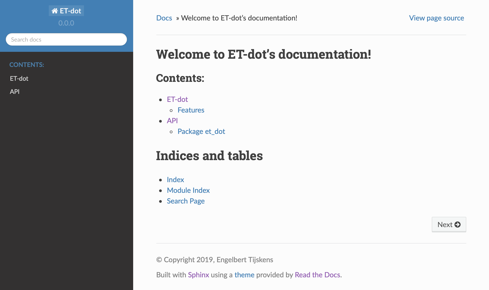
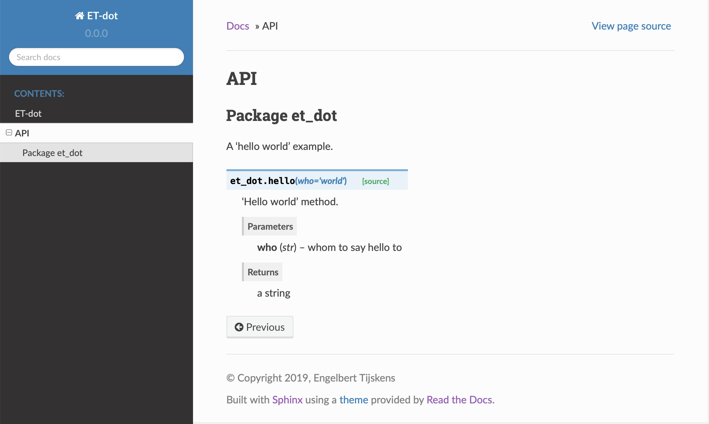
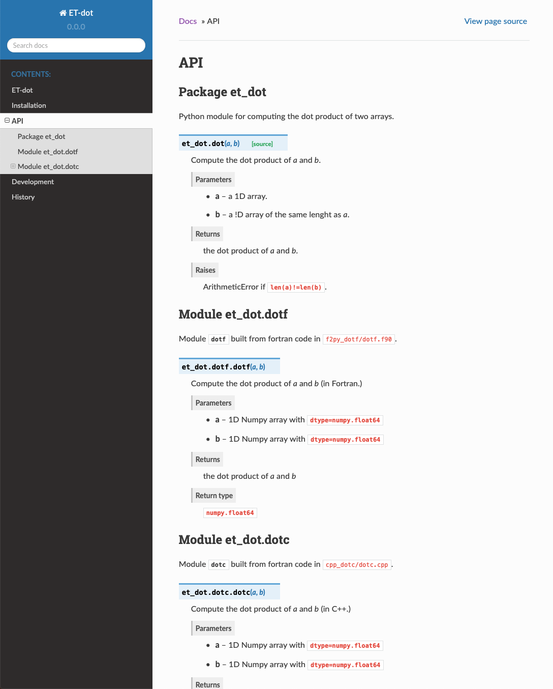

Tutorials¶
Tutorial 1: Getting started with micc¶
Note
These tutorials focus not just on how to use micc. Rather they describe a workflow for how you might set up a python project and develop it using best practises, with the help of micc.
All tutorial sections start with the bare essentials, which should get you up and running. They are often followed by more detailed subsections that provide useful background information that is needed for intermediate or advanced usage. These sections have an explicit [intermediate] or [advanced] tag in the title, e.g. 1.1.1. Modules and packages [intermediate] and they are indented. Background sections can be skipped on first reading, but the user is encouraged to read them at some point. The tutorials are rather extensive as they interlaced with many good practices advises.
Micc wants to provide a practical interface to the many aspects of managing a Python project: setting up a new project in a standardized way, adding documentation, version control, publishing the code to PyPI, building binary extension modules in C++ or Fortran, dependency management, … For all these aspect there are tools available, yet i found myself struggling get everything right and looking up the details each time. Micc is an attempt to wrap all the details by providing the user with a standardized yet flexible workflow for managing a Python project. Standardizing is a great way to increase productivity. For many aspects the tools used by Micc are completely hidden from the user, e.g. project setup, adding components, building binary extensions, … For other aspects Micc provides just the necessary setup for you to use other tools as you need them. Learning to use the following tools is certainly beneficial:
Poetry: for dependency management, virtual environment creation, and publishing the project to PyPI (and a lot more, if you like). Although extremely handy on a desktop machine or a laptop, it does not play well with the module system that is used on the VSC clusters for accessing applications. A workaround is provided in Tutorial 6.
Git: for version control. Its use is optional but highly recommended. See Tutorial 4 for some git coverage.
Pytest: for (unit) testing. Also optional and also highly recommended.
Sphinx: for building documentation. Optional but recommended.
The basic commands for these tools are covered in these tutorials.
1.0 Micc setup¶
Before micc can be used it must be setup to specify some preferences. Most entries
have sensible default entries, but your name, email address and github user name
have to be provided by you, if they are to make any sense, obviously. The github
username is needed if you want to be able to push your commits to github.
Run micc setup to set the preferences:
> micc setup
your full name [first-name last-name]: Engelbert Tijskens
your e-mail address [your.email@whatev.er]: engelbert.tijskens@uantwerpen.be
your github username (leave empty if you do not have one,
or create one at https://github.com/join) [your-github-username]: etijskens
the initial version number of a new project [0.0.0]:
default git branch [master]:
default minimal Python version [3.7]:
Html theme for sphinx documentation [sphinx_rtd_theme]:
Choose default license (MIT license, BSD license, ISC license, Apache Software License 2.0, GNU General Public License v3, Not open source) [MIT license]:
python file extension [py]:
Done
If you want to change your preferences, edit the default entries in file
/Users/etijskens/.et_micc/micc.json
Note that these changes will only affect NEW projects. Existing projects will be unaffected.
You may want to correct your entries, but not that changes will only affect NEW projects, not existing ones.
1.1 Creating a project with micc¶
Creating a new project with micc is simple:
> micc create path/to/my_first_project
This creates a new project my_first_project in folder path/to.
Note that the directory path/to/my_first_project must either not exist,
or be empty.
Typically, the new project is created in the current working directory:
> cd path/to > micc create my_first_project [INFO] [ Creating project (my_first_project): [INFO] Python module (my_first_project): structure = (my_first_project/my_first_project.py) ... [INFO] ] done.
After creating the project, we cd into the project directory because then any further
micc commands will automatically act on the project in the current working directory:
> cd my_first_project
To apply a micc command to a project that is not in the current working directory see 1.2.1. The project path in micc [intermediate].
The above command creates a project for a simple Python module, that is, the
project directory will contain - among others - a file my_first_project.py in
which represents the Python module:
my_first_project # the project directory
└── my_first_project.py # the Python module, this is where your code goes
When some client code imports this module:
import my_first_module
Python reads and executes the code in my_first_module.py. (Typically, this registers
the methods and classes defined in the module file. Also some variables, may be set up).
Note that the name of the Python module name is (automatically) taken from the project name
that with gave in the micc create command. If you want project and module names to
differ from each other, check out the 1.1.2 What’s in a name [intermediate] section.
The module project type above is suited for problems that can be solved with a single
Python file (my_first_project.py in the above case). For more complex problems a
package structure is more appropriate. To learn more about the use of Python modules
vs packages, check out the 1.1.1. Modules and packages [intermediate] section below.
1.1.1. Modules and packages [intermediate]¶
A Python module is the simplest Python project we can create. It is meant for rather small projects that conveniently fit in a single (Python) file. More complex projects require a package structure. They are created by adding the
--packageflag on the command line:> micc create my_first_project --package [INFO] [ Creating project (my_first_project): [INFO] Python package (my_first_project): structure = (my_first_project/my_first_project/__init__.py) [INFO] [ Creating git repository ... [INFO] ] done. [WARNING] Run 'poetry install' in the project directory to create a virtual environment and install its dependencies. [INFO] ] done.The output shows a different file structure of the project than for a module. Instead of the file
my_first_project.pythere is a directorymy_first_project, containing a__init__.pyfile. So, the structure of a package project looks like this:my_first_project # the project directory └── my_first_project # the package directory └── __init__.py # the file where your code goesTypically, the package directory will contain several other Python files that together make up your Python package. When some client code imports a module with a package structure,
import my_first_modulePython reads the code in
my_first_module/__init__.pyand executes it. Themy_first_module/__init__.pyfile is the equivalent of themy_first_module.pyin a module structure.The distinction between a module structure and a package structure is also important when you publish the module. When installing a Python package with a module structure, only the
my_first_project.pywill be installed, while with the package structure the entiremy_first_projectdirectory will be installed.If you created a projected with a module structure and discover over time that its complexity has grown beyond the limits of a simple module, you can easily convert it to a package structure project at any time. First
cdinto the project directory and run:> cd my_first_project > micc convert-to-package [INFO] Converting Python module project my_first_project to Python package project. [WARNING] Pre-existing files that would be overwritten: [WARNING] /Users/etijskens/software/dev/workspace/p1/docs/index.rst Aborting because 'overwrite==False'. Rerun the command with the '--backup' flag to first backup these files (*.bak). Rerun the command with the '--overwrite' flag to overwrite these files without backup.Because we do not want to replace existing files inadvertently, this command will always fail, unless you add either the
--backupflag, in which case micc makes a backup of all files it wants to replace, or the--overwriteflag, in which case those files will be overwritten. Micc will always produce a list of files it wants to replace. You can safely use--overwrite, unless you deliberately modified one of the files in the list (which is rarely needed). If you did change one of the listed files, however, use the--backupflag and manually copy the the changes from the.bakfile to the new file.> micc convert-to-package --overwrite Converting simple Python project my_first_project to general Python project. [WARNING] '--overwrite' specified: pre-existing files will be overwritten WITHOUT backup: [WARNING] overwriting /Users/etijskens/software/dev/workspace/ET-dot/docs/index.rstand run the
infocommand to verify the result:> micc info Project my_first_project located at /Users/etijskens/software/dev/workspace/my_first_project package: my_first_project version: 0.0.0 structure: my_first_project/__init__.py (Python package)
1.1.2 What’s in a name [intermediate]¶
The name you choose for your project has many consequences. Ideally, a project name is:
descriptive,
unique,
short.
Although one might think of even more requirements, such as being easy to type, satisfying these three is already hard enough. E.g. my_nifty_module may possibly be unique, but it is neither descriptive, neither short. On the other hand, dot_product is descriptive, reasonably short, but probably not unique. Even my_dot_product is probably not unique, and, in addition, confusing to any user that might want to adopt your my_dot_product. A unique name - or at least a name that has not been taken before - becomes really important when you want to publish your code for others to use it. The standard place to publish Python code is the Python Package Index, where you find hundreds of thousands of projects, many of which are really interesting and of high quality. Even if there are only a few colleagues that you want to share your code with, you make their life (as well as yours) easier when you publish your my_nifty_module at PyPI. To install your
my_nifty_modulethey will only need to type:> pip install my_nifty_modulewhile having internet access, obviously. The name my_nifty_module is not used so far, but nevertheless we recommend to choose a better name. Micc will help you publishing your code at PyPI with as little effort as possible (see Tutorial 5 - Publishing your code), provided your name has not been used sofar. Note that the
micc createcommand has a--publishflag that checks if the name you want to use for your project is still available on PyPI, and, if not, refuses to create the project and asks you to use another name for your project:> micc create oops --publish [ERROR] The name 'oops' is already in use on PyPI. The project is not created. You must choose another name if you want to publish your code.As there are indeed hundreds of thousands of Python packages published on PyPI, finding a good name has become quite hard. Personally, I often use a simple and short descriptive name, prefixed by my initials,
et-, which usually makes the name unique. E.get-oopsdoes not exist. This has the additional advantage that all my published modules are grouped in the alphabetic PyPI listing.Another point of attention is that although in principle project names can be anything supported by your OS file system, as they are just the name of a directory, micc insists that module and package names comply with the PEP8 module naming rules. Micc derives the package (or module) name from the project name as follows:
capitals are replaced by lower-case
hyphens``’-‘`` are replaced by underscores
'_'If the resulting module name is not PEP8 compliant, you get an informative error message:
> micc create 1proj [ERROR] The project name (1proj) does not yield a PEP8 compliant module name:" The project name must start with char, and contain only chars, digits, hyphens and underscores." Alternatively, provide an explicit module name with the --module-name=<name>"The last line indicates that you can specify an explicit module name, unrelated to the project name. In that case PEP8 compliance is not checked. The responsability then is all yours.
1.2 First steps in project management (using micc)¶
1.2.1. The project path in micc [intermediate]¶
All micc commands accept the global
--project-path=<path>parameter. Global parameters appear before the subcommand name. E.g. the command:> micc --project-path path/to/my_first_project info Project my_first_project located at path/to/my_first_project. package: my_first_project version: 0.0.0 structure: my_first_project.py (Python module)prints some info on the project at
path/to/my_first_project. This can conveniently be abbreviated as:> micc -p path/to/my_first_project infoEven the
createcommand accepts the global--project-path=<path>parameter:> micc -p path/to/my_second_project createwill create project
my_second_projectin the specified location. The command is identical to:> micc create path/to/my_second_projectThe default value for the project path is the current working directory, so:
> micc infowill print info about the project in the current working directory.
Hence, while working on a project, it is convenient to cd into the project directory and execute your micc commands from there, without the the global
--project-path=<path>parameter.This approach works even with the
micc createcommand. If you create an empty directory andcdinto it, you can just runmicc createand it will create the project in the current working directory, taking the project name from the name of the current working directory.
1.2.2 Virtual environments¶
Virtual environments enable you to set up a Python environment that isolated from the installed Python on your system. In this way you can easily cope with varying dependencies between your Python projects.
For a detailed introduction to virtual environments see Python Virtual Environments: A Primer.
When you are developing or using several Python projects it can indeed become difficult for a single Python environment to satisfy all the dependency requirements of these projects simultaneously. Dependency conflicts can easily arise. Python promotes and facilitates code reuse and as a consequence Python tools typically depend on tens to hundreds of other modules. If toolA and toolB both need moduleC, but each requires a different version of it, there is a conflict because it is impossible to install two versions of the same module in a Python environment. The solution that the Python community has come up with for this problem is the construction of virtual environments, which isolates the dependencies of a single project in a single environment.
1.2.2.1 Creating virtual environments¶
Since Python 3.3 Python comes with a venv module for the creation of
virtual environments. To set up a virtual environment, you first select the Python
version you want to use, e.g. using pyenv:
> pyenv local 3.7.5
> python --version
Python 3.7.5
> which python
/Users/etijskens/.pyenv/shims/python
Next, create the virtual environment my_virtual_environment:
> python -m venv my_virtual_environment
This creates a directory my_virtual_environment in the current working directory
which contains a complete isolated Python environment. To use the virtual environment, you
must activate it:
> source my_virtual_environment/bin/activate
(my_virtual_environment) >
Activating a virtual environment modifies the command prompt to remind you constantly
that you are now working in virtual environment my_virtual_environment. You can
verify the Python version and its location:
(my_virtual_environment) > python –version Python 3.7.5 (my_virtual_environment) > which python path/to/my_virtual_environment/bin/python
If you now install new packages, they will be installed in the virtual environment only. The virtual environment can be deactivated by running
(my_virtual_environment) > deactivate
>
after which the (my_virtual_environment) in the prompt disappears, and you are
back to where you created the virtual environment:
> python --version
Python 3.7.5
> which python
/Users/etijskens/.pyenv/shims/python
>
1.2.2.2 Creating virtual environments with Poetry¶
Poetry uses the above mechanism to manage virtual environment on a per project
basis, and can install all the dependencies of that project, as specified in the
pyproject.toml file, using the install command. Since our project does
not have a virtual environment yet, Poetry creates one, named .venv, and
installs all dependencies in it. Again, we first choose the Python version to use
for the project:
> pyenv local 3.7.5
> python --version
Python 3.7.5
> which python
/Users/etijskens/.pyenv/shims/python
Next, we cd into the project directory and use poetry to create the virtual environment
and at the same install all the project’s dependencies aa specified in pyproject.toml:
> cd path/to/my_first_project
> poetry install
Creating virtualenv et-dot in /Users/etijskens/software/dev/my_first_project/.venv
Updating dependencies
Resolving dependencies... (0.8s)
Writing lock file
Package operations: 10 installs, 0 updates, 0 removals
- Installing pyparsing (2.4.5)
- Installing six (1.13.0)
- Installing atomicwrites (1.3.0)
- Installing attrs (19.3.0)
- Installing more-itertools (7.2.0)
- Installing packaging (19.2)
- Installing pluggy (0.13.1)
- Installing py (1.8.0)
- Installing wcwidth (0.1.7)
- Installing pytest (4.6.6)
- Installing my_first_project (0.0.0)
The installed packages are all dependencies of pytest which we require for testing
our code. The last package is my_first_project itself, which is installed in so-called
development mode. This means that any changes in the source code are immediately
visible in the virtual environment. Adding/removing dependencies is easily achieved
by running poetry add some_module and poetry remove some_other_module.
Consult the poetry_documentation for details.
To use the just created virtual environment of our project, we must activate it, as before:
> source .venv/bin/activate
(.venv) >
Poetry always names the virtual environment of a project .venv. So, when
working on several projects at the same time, you can sometimes get confused which
project’s virtual environment is actually activated. Just run:
(.venv) > which python
path/to/my_first_project/.venv/bin/python
(.venv) >
If you no longer need the virtual environment, deactivate it:
(.venv) > deactivate
>
If something is wrong with a virtual environment, you can simply delete it:
> rm -rf .venv
and create it again. Sometimes it is necessary to delete the poetry.lock as well:
> rm poetry.lock
1.2.3 Modules and scripts¶
Micc always creates fully functional examples, complete with test code and documentation,
so that you can inspect the files and learn how things are working. The my_first_project.py
module contains a simple hello world method, called hello:
# -*- coding: utf-8 -*-
"""
Package my_first_project
========================
A 'hello world' example.
"""
__version__ = "0.0.0"
def hello(who='world'):
"""'Hello world' method."""
result = "Hello " + who
return result
The module can be used right away. Open an interactive Python session and enter the following commands:
> cd path/to/my_first_project
> source .venv/bin/activate
(.venv) > python
Python 3.8.0 (default, Nov 25 2019, 20:09:24)
[Clang 11.0.0 (clang-1100.0.33.12)] on darwin
Type "help", "copyright", "credits" or "license" for more information.
>>> import my_first_project
>>> my_first_project.hello()
'Hello world'
>>> my_first_project.hello("student")
'Hello student'
>>>
Productivity tip
Using an interactive python session to verify that a module does indeed what
you expect is a bit cumbersome. A quicker way is to modify the module so that it
can also behave as a script. Add the following lines to my_first_project.py
at the end of the file:
if __name__=="__main__":
print(hello())
print(hello("student"))
and execute it on the command line:
(.venv) > python my_first_project.py
Hello world
Hello student
The body of the if __name__=="__main__": statement is only executed if the file
is executed as a script. When the file is imported, the condition is False, and
the body (the script part) is ignored.
While working on a single-file project it is sometimes handy to put your tests
the body of if __name__=="__main__":, as below:
if __name__=="__main__":
assert hello() == "Hello world"
assert hello("student") == "Hello student"
print("-*# success #*-")
The last line makes sure that you get a message that all tests went well if they
did, otherwise an AssertionError will be raised.
When you now execute the script, you should see:
(.venv) > python my_first_project.py
-*# success #*-
When you develop your code in an IDE like eclipse+pydev or PyCharm, you can even execute the file without having to leave your editor and switch to a terminal. You can quickly code, test and debug in a single window.
While this is a very productive way of developing, it is a bit on the quick and dirty side. If the module code and the tests become more involved, however,the file will soon become cluttered with test code and a more scalable way to organise your tests is needed. Micc has already taken care of this.
1.2.4 Testing your code¶
Test driven development is a software development process that relies on the repetition of a very short development cycle: requirements are turned into very specific test cases, then the code is improved so that the tests pass. This is opposed to software development that allows code to be added that is not proven to meet requirements. The advantage of this is clear: the shorter the cycle, the smaller the code that is to be searched for bugs. This allows you to produce correct code faster, and in case you are a beginner, also speeds your learning of Python. Please check Ned Batchelder’s very good introduction to testing with pytest.
When micc creates a new project, or when you add components to an existing project,
it immediately adds a test script for each component in the tests directory.
The test script for the my_first_project module is in file ET-dot/tests/test_my_first_project.py.
Let’s take a look at the relevant section:
# -*- coding: utf-8 -*-
"""Tests for my_first_project package."""
import my_first_project
def test_hello_noargs():
"""Test for my_first_project.hello()."""
s = my_first_project.hello()
assert s=="Hello world"
def test_hello_me():
"""Test for my_first_project.hello('me')."""
s = my_first_project.hello('me')
assert s=="Hello me"
Tests like this are very useful to ensure that during development the changes to your code do not break things. There are many Python tools for unit testing and test driven development. Here, we use Pytest:
> pytest
=============================== test session starts ===============================
platform darwin -- Python 3.7.4, pytest-4.6.5, py-1.8.0, pluggy-0.13.0
rootdir: /Users/etijskens/software/dev/workspace/my_first_project
collected 2 items
tests/test_my_first_project.py .. [100%]
============================ 2 passed in 0.05 seconds =============================
The output shows some info about the environment in which we are running the tests,
the current working directory (c.q. the project directory, and the number of tests
it collected (2). Pytest looks for test methods in all test_*.py or
*_test.py files in the current directory and accepts test prefixed methods
outside classes and test prefixed methods inside Test prefixed classes as test
methods to be executed.
Note
Sometimes pytest discovers unintended test files or functions in other directories
than the tests directory, leading to puzzling errors. It is therefore safe
to instruct pytest to look only in the tests directory:
> pytest tests
...
If a test would fail you get a detailed report to help you find the cause of the error and fix it.
1.2.4.1 Debugging test code¶
When the report provided by pytest does not yield a clue on the
cause of the failing test, you must use debugging and execute the failing test step
by step to find out what is going wrong where. From the viewpoint of pytest, the
files in the tests directory are modules. Pytest imports them and collects
the test methods, and executes them. Micc also makes every test module executable using
the technique described in 1.2.3 Modules and scripts. At the end of every test file you
will find some extra code:
if __name__ == "__main__":
the_test_you_want_to_debug = test_hello_noargs
print("__main__ running", the_test_you_want_to_debug)
the_test_you_want_to_debug()
print('-*# finished #*-')
On the first line of the if __name__ == "__main__": body, the name of the test method
we want to debug is set to variable the_test_you_want_to_debug, here test_hello_noargs.
The variable thus becomes an alias for the test method. Line 2 prints a message with the name
of the test method being debugged:
(.venv) > python tests/test_et_dot.py
__main__ running <function test_hello_noargs at 0x1037337a0> # output of line 2
-*# finished #*- # output of line 4
Line 3 actually calls the test method. Finally, line 4 prints a message to let the user know that the script is finished.
You can use your favourite Python debugger to execute this script and step into the
test_hello_noargs test method and from there into my_first_project.hello to
examine if everything goes as expected.
1.2.5 Generating documentation [intermediate]¶
Documentation is extracted from the source code using Sphinx.
It is almost completely generated automatically from the doc-strings in your code. Doc-strings are the
text between triple double quote pairs in the examples above, e.g. """This is a doc-string.""".
Important doc-strings are:
module doc-strings: at the beginning of the module. Provides an overview of what the module is for.
class doc-strings: right after the
classstatement: explains what the class is for. (Usually, the doc-string of the __init__ method is put here as well, as dunder methods (starting and ending with a double underscore) are not automatically considered by sphinx.method doc-strings: right after a
defstatement.
According to pep-0287 the recommended format for Python doc-strings is restructuredText. E.g. a typical method doc-string looks like this:
def hello_world(who='world'): """Short (one line) description of the hello_world method. A detailed and longer description of the hello_world method. blablabla... :param str who: an explanation of the who parameter. You should mention e.g. its default value. :returns: a description of what hello_world returns (if relevant). :raises: which exceptions are raised under what conditions. """
Here, you can find some more examples.
Thus, if you take good care writing doc-strings, helpful documentation follows automatically.
Micc sets up al the necessary components for documentation generation in sub-directory
et-dot/docs/. There, you find a Makefile that provides a simple interface
to Sphinx. Here is the workflow that is necessary to build the documentation:
> cd path/to/et-dot
> source .venv/bin/activate
(.venv) > cd docs
(.venv) > make html
The last line produces documentation in html format.
Let’s explain the steps
cdinto the project directory:> cd path/to/et-dot >
Activate the project’s virtual environment:
> source .venv/bin/activate (.venv) >
This is necessary because the tools for documentation generation are installed there.
cdinto the docs subdirectory:(.venv) > cd docs (.venv) >
Here, you will find the
Makefilethat does the work:(.venv) > ls -l total 80 -rw-r--r-- 1 etijskens staff 1871 Dec 10 11:24 Makefile ...
To see a list of possible documentation formats, just run make without arguments:
(.venv) > make
Sphinx v2.2.2
Please use `make target' where target is one of
html to make standalone HTML files
dirhtml to make HTML files named index.html in directories
singlehtml to make a single large HTML file
pickle to make pickle files
json to make JSON files
htmlhelp to make HTML files and an HTML help project
qthelp to make HTML files and a qthelp project
devhelp to make HTML files and a Devhelp project
epub to make an epub
latex to make LaTeX files, you can set PAPER=a4 or PAPER=letter
latexpdf to make LaTeX and PDF files (default pdflatex)
latexpdfja to make LaTeX files and run them through platex/dvipdfmx
text to make text files
man to make manual pages
texinfo to make Texinfo files
info to make Texinfo files and run them through makeinfo
gettext to make PO message catalogs
changes to make an overview of all changed/added/deprecated items
xml to make Docutils-native XML files
pseudoxml to make pseudoxml-XML files for display purposes
linkcheck to check all external links for integrity
doctest to run all doctests embedded in the documentation (if enabled)
coverage to run coverage check of the documentation (if enabled)
(.venv) >
To build documentation in html format, enter:
(.venv) > make html ... (.venv) >
This will generation documentation in
et-dot/docs/_build/html. Note that it is essential that this command executes in the project’s virtual environment. You can view the documentation in your favorite browser:(.venv) > open _build/html/index.html # on macosx
or:
(.venv) > xdg-open _build/html/index.html # on ubuntu
(On the cluster the command will fail because it does not have a graphical environment and it cannot run a html-browser.)
Here is a screenshot:
If your expand the API tab on the left, you get to see the
my_first_projectmodule documentation, as it generated from the doc-strings:To build documentation in .pdf format, enter:
(.venv) > make latexpdf
This will generation documentation in :file:et-dot/docs/_build/latex/et-dot.pdf`. You can view it in your favorite pdf viewer:
(.venv) > open _build/latex/et-dot.pdf # on macosx
or:
(.venv) > xdg-open _build/latex/et-dot.pdf # on ubuntu
Note
When building documentation by running the docs/Makefile, it is
verified that the correct virtual environment is activated, and that the needed
Python modules are installed in that environment. If not, they are first installed
using pip install. These components are not becoming dependencies of the project.
If needed you can add dependencies using the poetry add command.
The boilerplate code for documentation generation is in the docs directory, just as
if it were generated by hand using the sphinx-quickstart command. (In fact, it was
generated using sphinx-quickstart, but then turned into a
Cookiecutter template.)
those files is not recommended, and only rarely needed. Then there are a number
of .rst files with capitalized names in the project directory:
README.rstis assumed to contain an overview of the project,API.rstdescribes the classes and methods of the project in detail,APPS.rstdescribes command line interfaces or apps added to your project.AUTHORS.rstlist the contributors to the projectHISTORY.rstwhich should describe the changes that were made to the code.
The .rst extenstion stands for reStructuredText. It is a simple and concise
approach to text formatting.
If you add components to your project through micc, care is taken that the
.rst files in the project directory and the docs directory are
modified as necessary, so that sphinx is able find the doc-strings. Even for
command line interfaces (CLI, or console scripts) based on
click the documentation is generated
neatly from the help strings of options and the doc-strings of the commands.
1.2.6 Version control [advanced]¶
Although version control is extremely important for any software project with a lifetime of more a day, we mark it as an advanced topic as it does not affect the development itself. Micc facilitates version control by automatically creating a local git repository in your project directory. If you do not want to use it, you may ignore it or even delete it.
Git is a version control system that solves many practical problems related to the process software development, independent of whether your are the only developer, or there is an entire team working on it from different places in the world. You find more information about how micc uses git in Tutorial 4: Version control and version management.
Let’s take a close look at the output of the
micc create my_first_projectcommand. The first line tells us that a project directory is being created:[INFO] [ Creating project (my_first_project):The next line explains the structure of the project, module or package:
[INFO] Python module (my_first_project): structure = (my_first_project/my_first_project.py)Next we are informed that a local git repository is being created:
[INFO] [ Creating git repositoryMicc tries to push this local repository to a remote repository at https://github.com/yourgitaccount. If you did not create a remote git repository on beforehand, this gives rise to some warnings:
[WARNING] > git push -u origin master [WARNING] (stderr) remote: Repository not found. fatal: repository 'https://github.com/yourgitaccount/my_first_project/' not foundMicc is unable to push the local repo to github, if the remote repo does not exist. The local repo is for many purposes sufficient, but the remote repo enables sharing your work with others and provides a backup of your work.
Finally, micc informs us that the tasks are finished.
[INFO] ] done. [INFO] ] done. >
Note that the name of the remote git repo is the project name, not the module name.
1.3 Miscellaneous¶
1.3.1 The license file [intermediate]¶
The project directory contains a
LICENCEfile, atextfile describing the licence applicable to your project. You can choose between
MIT license (default),
BSD license,
ISC license,
Apache Software License 2.0,
GNU General Public License v3 and
Not open source.
MIT license is a very liberal license and the default option. If you’re unsure which license to choose, you can use resources such as GitHub’s Choose a License
You can select the license file when you create the project:
> cd some_empty_dir > micc create --license BSDOf course, the project depends in no way on the license file, so it can be replaced manually at any time by the license you desire.
1.3.2 The pyproject.toml file [intermediate]¶
The file
pyproject.toml(located in the project directory) is the modern way to describe the build system requirements of the project: PEP 518. Although most of this file’s content is generated automatically by micc and poetry some understanding of it is useful, consult https://poetry.eustace.io/docs/pyproject/.The
pyproject.tomlfile is rather human-readable:> cat pyproject.toml [tool.poetry] name = "ET-dot" version = "1.0.0" description = "<Enter a one-sentence description of this project here.>" authors = ["Engelbert Tijskens <engelbert.tijskens@uantwerpen.be>"] license = "MIT" readme = 'README.rst' repository = "https://github.com/etijskens/ET-dot" homepage = "https://github.com/etijskens/ET-dot" keywords = ['packaging', 'poetry'] [tool.poetry.dependencies] python = "^3.7" et-micc-build = "^0.10.10" [tool.poetry.dev-dependencies] pytest = "^4.4.2" [tool.poetry.scripts] [build-system] requires = ["poetry>=0.12"] build-backend = "poetry.masonry.api"
1.3.3 The log file Micc.log [intermediate]¶
The project directory also contains a log file micc.log. All micc commands
that modify the state of the project leave a trace in this file, So you can look up
what happened when to your project. Should you think that the log file has become
too big, or just useless, you can delete it manually, or add the --clear-log flag
before any micc subcommand, to remove it. If the subcommand alters the state of the
project, the log file will only contain the log messages from the last subcommand.
> ll micc.log
-rw-r--r-- 1 etijskens staff 34 Oct 10 20:37 micc.log
> micc --clear-log info
Project bar located at /Users/etijskens/software/dev/workspace/bar
package: bar
version: 0.0.0
structure: bar.py (Python module)
> ll micc.log
ls: micc.log: No such file or directory
1.3.4 Adjusting micc to your needs [advanced]¶
Micc is based on a series of additive Cookiecutter templates which generate the boilerplate code. If you like, you can tweak these templates in the
site-packages/et_micc/templatesdirectory of your micc installation. When youpipxinstalled micc, that is typically something like:
~/.local/pipx/venvs/et-micc/lib/pythonX.Y/site-packages/et_micc,where :file`pythonX.Y` is the python version you installed micc with.
1.4 A first real project¶
Let’s start with a simple problem: a Python module that computes the scalar product of two arrays, generally referred to as the dot product. Admittedly, this not a very rewarding goal, as there are already many Python packages, e.g. Numpy, that solve this problem in an elegant and efficient way. However, because the dot product is such a simple concept in linear algebra, it allows us to illustrate the usefulness of Python as a language for High Performance Computing, as well as the capabilities of Micc.
First, set up a new project for this dot project, which i named ET-dot, ET being my initials. Not knowing beforehand how involved this project will become, we create a simple module project:
> micc -p ET-dot create
[INFO] [ Creating project (ET-dot):
[INFO] Python module (my_first_project): structure = (ET-dot/et_dot.py
[INFO] [ Creating git repository
[WARNING] > git push -u origin master
[WARNING] (stderr)
remote: Repository not found.
fatal: repository 'https://github.com/etijskens/ET-dot/' not found
[INFO] ] done.
[WARNING] Run 'poetry install' in the project directory to create a virtual environment and install its dependencies.
[INFO] ] done.
> cd ET-dot
As the output shows the module name is converted from the project name and made compliant with the PEP8 module naming rules: et_dot. Next, we create a virtual environment for the project with all the standard micc dependencies:
> poetry install
Creating virtualenv et-dot in /Users/etijskens/software/dev/workspace/tmp/ET-dot/.venv
Updating dependencies
Resolving dependencies... (0.8s)
Writing lock file
Package operations: 10 installs, 0 updates, 0 removals
- Installing pyparsing (2.4.5)
- Installing six (1.13.0)
- Installing atomicwrites (1.3.0)
- Installing attrs (19.3.0)
- Installing more-itertools (8.0.2)
- Installing packaging (19.2)
- Installing pluggy (0.13.1)
- Installing py (1.8.0)
- Installing wcwidth (0.1.7)
- Installing pytest (4.6.7)
- Installing ET-dot (0.0.0)
>
Next, activate the virtual environment:
> source .venv/bin/activate (.venv) >
Open module file et_dot.py in your favourite editor and code a dot product
method (naievely) as follows:
# -*- coding: utf-8 -*-
"""
Package et_dot
==============
Python module for computing the dot product of two arrays.
"""
__version__ = "0.0.0"
def dot(a,b):
"""Compute the dot product of *a* and *b*.
:param a: a 1D array.
:param b: a 1D array of the same length as *a*.
:returns: the dot product of *a* and *b*.
:raises: ArithmeticError if ``len(a)!=len(b)``.
"""
n = len(a)
if len(b)!=n:
raise ArithmeticError("dot(a,b) requires len(a)==len(b).")
d = 0
for i in range(n):
d += a[i]*b[i]
return d
We defined a dot() method with an informative doc-string that describes
the parameters, the return value and the kind of exceptions it may raise.
We could use the dot method in a script as follows:
from et_dot import dot
a = [1,2,3]
b = [4.1,4.2,4.3]
a_dot_b = dot(a,b)
Note
This dot product implementation is naive for many reasons:
Python is very slow at executing loops, as compared to Fortran or C++.
The objects we are passing in are plain Python
list`s. A :py:obj:`listis a very powerfull data structure, with array-like properties, but it is not exactly an array. Alistis in fact an array of pointers to Python objects, and therefor list elements can reference anything, not just a numeric value as we would expect from an array. With elements being pointers, looping over the array elements implies non-contiguous memory access, another source of inefficiency.The dot product is a subject of Linear Algebra. Many excellent libraries have been designed for this purpose. Numpy should be your starting point because it is well integrated with many other Python packages. There is also Eigen a C++ library for linear algebra that is neatly exposed to Python by pybind11.
However, starting out with a simple and naive implementation is not a bad idea at all. Once it is correct, it can serve as reference implementation to test any improvements against it.
In order to proof that our implementation of the dot product is correct, we write some
tests. For this we open the file tests/test_et_dot.py. Remove the original tests put in
by micc, and add a new one:
import et_dot
def test_dot_aa():
a = [1,2,3]
expected = 14
result = et_dot.dot(a,a)
assert result==expected
Save the file, and run the test. Pytest will show a line for every test source file.
On each such line a . will appear for every successfull test, and a F for a
failing test.
(.venv) > pytest
=============================== test session starts ===============================
platform darwin -- Python 3.7.4, pytest-4.6.5, py-1.8.0, pluggy-0.13.0
rootdir: /Users/etijskens/software/dev/workspace/ET-dot
collected 1 item
tests/test_et_dot.py . [100%]
============================ 1 passed in 0.08 seconds =============================
(.venv) >
Note
If the project’s virtual environment is not activated, the command pytest
will generally not be found.
Great! our test succeeded. Let’s increment the project’s version (-p is short for --patch,
and requests incrementing the patch component of the version string):
(.venv) > micc version -p
[INFO] (ET-dot)> micc version (0.0.0) -> (0.0.1)
You can read more about the micc version command in section 4.2 Version management.
Obviously, our test tests only one particular case. A clever way of testing is to focus on properties. From mathematics we now that the dot product is commutative. Let’s add a test for that.
import random
def test_dot_commutative():
# create two arrays of length 10 with random float numbers:
a = []
b = []
for _ in range(10):
a.append(random.random())
b.append(random.random())
# do the test
ab = et_dot.dot(a,b)
ba = et_dot.dot(b,a)
assert ab==ba
You can easily verify that this test works too. We increment the version string again:
(.venv) > micc version -p
[INFO] (ET-dot)> micc version (0.0.1) -> (0.0.2)
There is however a risk in using arrays of random numbers. Maybe we were just lucky and got random numbers that satisfy the test by accident. Also the test is not reproducible anymore. The next time we run pytest we will get other random numbers, and maybe the test will fail. That would represent a serious problem: since we cannot reproduce the failing test, we have no way finding out what went wrong. For random numbers we can fix the seed at the beginning of the test. Random number generators are deterministic, so fixing the seed makes the code reproducible. To increase coverage we put a loop around the test.
def test_dot_commutative_2():
# Fix the seed for the random number generator of module random.
random.seed(0)
# choose array size
n = 10
# create two arrays of length n with with zeros:
a = n * [0]
b = n * [0]
# repetion loop:
for r in range(1000):
# fill a and b with random float numbers:
for i in range(n):
a[i] = random.random()
b[i] = random.random()
# do the test
ab = et_dot.dot(a,b)
ba = et_dot.dot(b,a)
assert ab==ba
Again the test works. Another property of the dot product is that the dot product with a zero vector is zero.
def test_dot_zero():
# Fix the seed for the random number generator of module random.
random.seed(0)
# choose array size
n = 10
# create two arrays of length n with with zeros:
a = n * [0]
zero = n * [0]
# repetion loop (the underscore is a placeholder for a variable dat we do not use):
for _ in range(1000):
# fill a with random float numbers:
for i in range(n):
a[i] = random.random()
# do the test
azero = et_dot.dot(a,zero)
assert azero==0
This test works too. Furthermore, the dot product with a vector of ones is the sum of the elements of the other vector:
def test_dot_one():
# Fix the seed for the random number generator of module random.
random.seed(0)
# choose array size
n = 10
# create two arrays of length n with with zeros:
a = n * [0]
one = n * [1.0]
# repetion loop (the underscore is a placeholder for a variable dat we do not use):
for _ in range(1000):
# fill a with random float numbers:
for i in range(n):
a[i] = random.random()
# do the test
aone = et_dot.dot(a,one)
expected = sum(a)
assert aone==expected
Success again. We are getting quite confident in the correctness of our implementation. Here is another test:
def test_dot_one_2():
a1 = 1.0e16
a = [a1 ,1.0,-a1]
one = [1.0,1.0,1.0]
expected = 1.0
result = et_dot.dot(a,one)
assert result==expected
Clearly, it is a special case of the test above the expected result is the sum of the elements
in a, that is 1.0. Yet it - unexpectedly - fails. Fortunately pytest produces a readable
report about the failure:
> pytest
================================= test session starts ==================================
platform darwin -- Python 3.7.4, pytest-4.6.5, py-1.8.0, pluggy-0.13.0
rootdir: /Users/etijskens/software/dev/workspace/ET-dot
collected 6 items
tests/test_et_dot.py .....F [100%]
======================================= FAILURES =======================================
____________________________________ test_dot_one_2 ____________________________________
def test_dot_one_2():
a1 = 1.0e16
a = [a1 , 1.0, -a1]
one = [1.0, 1.0, 1.0]
expected = 1.0
result = et_dot.dot(a,one)
> assert result==expected
E assert 0.0 == 1.0
tests/test_et_dot.py:91: AssertionError
========================== 1 failed, 5 passed in 0.17 seconds ==========================
>
Mathematically, our expectations about the outcome of the test are certainly correct. Yet,
pytest tells us it found that the result is 0.0 rather than 1.0. What could possibly
be wrong? Well our mathematical expectations are based on our - false - assumption that the
elements of a are real numbers, most of which in decimal representation are characterised
by an infinite number of digits. Computer memory being finite, however, Python (and for that
matter all other programming languages) uses a finite number of bits to approximate real
numbers. These numbers are called floating point numbers and their arithmetic is called
floating point arithmetic. Floating point arithmetic has quite different properties than
real number arithmetic. A floating point number in Python uses 64 bits which yields
approximately 15 representable digits. Observe the consequences of this in the Python statements
below:
>>> 1.0 + 1e16
1e+16
>>> 1e16 + 1.0 == 1e16
True
>>> 1.0 + 1e16 == 1e16
True
>>> 1e16 + 1.0 - 1e16
0.0
There are several lessons to be learned from this:
The test does not fail because our code is wrong, but because our mind is used to reasoning about real number arithmetic, rather than floating point arithmetic rules. As the latter is subject to round-off errors, tests sometimes fail unexpectedly. Note that for comparing floating point numbers the the standard library provides a
math.isclose()method.Another silent assumption by which we can be mislead is in the random numbers. In fact,
random.random()generates pseudo-random numbers in the interval ``[0,1[``, which is quite a bit smaller than]-inf,+inf[. No matter how often we run the test the special case above that fails will never be encountered, which may lead to unwarranted confidence in the code.
So, how do we cope with the failing test? Here is a way using math.isclose():
import math
def test_dot_one_2():
a1 = 1.0e16
a = [a1 , 1.0, -a1]
one = [1.0, 1.0, 1.0]
expected = 1.0
result = et_dot.dot(a,one)
# assert result==expected
assert math.isclose(result, expected, abs_tol=10.0)
This is a reasonable solution if we accept that when dealing with numbers as big as 1e16,
an absolute difference of 10 is negligible.
Another aspect that should be tested is the behavior of the code in exceptional circumstances.
Does it indeed raise ArithmeticError if the arguments are not of the same length?
Here is a test:
import pytest
def test_dot_unequal_length():
a = [1,2]
b = [1,2,3]
with pytest.raises(ArithmeticError):
et_dot.dot(a,b)
Here, pytest.raises() is a context manager that will verify that ArithmeticError
is raise when its body is executed.
Note
A detailed explanation about context managers see https://jeffknupp.com/blog/2016/03/07/python-with-context-managers//
Note that you can easily make et_dot.dot() raise other
exceptions, e.g. TypeError by passing in arrays of non-numeric types:
>>> et_dot.dot([1,2],[1,'two'])
Traceback (most recent call last):
File "<stdin>", line 1, in <module>
File "/Users/etijskens/software/dev/workspace/ET-dot/et_dot.py", line 23, in dot
d += a[i]*b[i]
TypeError: unsupported operand type(s) for +=: 'int' and 'str'
>>>
Note that it is not the product a[i]*b[i] for i=1 that is wreaking havoc, but
the addition of its result to d.
At this point you might notice that even for a very simple and well defined function
as the dot product the amount of test code easily exceeds the amount of tested code
by a factor of 5 or more. This is not at all uncommon. As the tested code here is an
isolated piece of code, you will probably leave it alone as soon as it passes the tests
and you are confident in the solution. If at some point, the dot() would fail
you should write a test that reproduces the error and improve the solution so that it
passes the test.
When constructing software for more complex problems, there will very soon be many interacting components and running the tests after modifying one of the components will help you assure that all components still play well together, and spot problems as soon as possible.
At this point we want to produce a git tag of the project:
(.venv) > micc tag
[INFO] Creating git tag v0.0.7 for project ET-dot
[INFO] Done.
The tag is a label for the current code base of our project. It marks a specific point in the development of a code, in this case the point where our (first) implementation is considered correct. That is, however, not to say that the tests are now useless and can be thrown away. Every time we need to change the implemention, to improve the user interface or the efficiency, or add a feature, we should run the tests again to make sure that the changes did not break the code. of course, we should also extend the test suite to cover the new properties of the code.
1.5 Improving efficiency¶
There are times when a just a correct solution to the problem at hand
is sufficient. If ET-dot is meant to compute a few dot products of small
arrays, the naive implementation above will probably be sufficient.
However, if it is to be used many times and for large arrays and the uses
is impatiently waiting for the answer, or if your computing resources are
scarse, a more efficient implementation is needed. Especially in scientific
computing and high performance computing, where compute tasks may run for days
using hundreds or even thousands of of compute nodes and resources are
to be shared with many researchers, using the resources efficiently is
of utmost importance and efficient implementations are therefore indispensable.
However important efficiency may be, it is nevertheless a good strategy for developing a new piece of code, to start out with a simple, even naive implementation, neglecting efficiency considerations totally, instead focussing on correctness. Python has a reputation of being an extremely productive programming language. Once you have proven the correctness of this first version it can serve as a reference solution to verify the correctness of later more efficient implementations. In addition, the analysis of this version can highlight the sources of inefficiency and help you focus your attention to the parts that really need it.
1.5.1 Timing your code¶
The simplest way to probe the efficiency of your code is to time it: write a simple script and record how long it takes to execute. Let us first look at the structure of a Python script.
Here’s a script (using the above structure) that computes the dot product of two long arrays of random numbers.
"""file et_dot/prof/run1.py"""
import random
from et_dot import dot
def random_array(n=1000):
"""Create an array with n random numbers in [0,1[."""
# Below we use a list comprehension (a Python idiom for creating a list from an iterable object).
a = [random.random() for i in range(n)]
return a
if __name__=='__main__':
a = random_array()
b = random_array()
print(dot(a,b))
print('-*# done #*-')
We store this file, which we rather simply called run1.py, e.g. in a directory
prof where we intend to keep all our profiling work. You can execute the script
from the command line (with the project directory as the current working directory:
(.venv) > python ./prof/run1.py
251.08238559724717
-*# done #*-
Note
As our script does not fix the random number seed, every run has a different outcome.
We are now ready to time our script. There are many ways to achieve this. Here is a
particularly good introduction. The
et-stopwatch project takes this a little
further. We add it as a development dependency (-D) of our project:
(.venv) > poetry add et_stopwatch -D
Using version ^0.3.0 for et_stopwatch
Updating dependencies
Resolving dependencies... (0.2s)
Writing lock file
Package operations: 1 install, 0 updates, 0 removals
- Installing et-stopwatch (0.3.0)
(.venv) >
A development dependency is a package that is not needed for using the package at hand, bit only needed during development.
Using the Stopwatch class to time pieces of code is simple:
"""file et_dot/prof/run1.py"""
from et_stopwatch import Stopwatch
...
if __name__=='__main__':
with Stopwatch(message="init"):
a = random_array()
b = random_array()
with Stopwatch(message="dot "):
dot(a,b)
print('-*# done #*-')
When the script is exectuted the two with blocks will print the time it takes
to execytre their body. The first with block times the initialisation if the arrays,
and the second dot product computation.
(.venv) > python ./prof/run1.py
init: 0.000281 s
dot : 0.000174 s
-*# done #*-
>
Note that the initialization phase took longer than the computation. Random number generation is rather expensive.
1.5.2 Comparing to Numpy¶
As said earlier, our implementation of the dot product is rather naive. If you want
to become a good programmer, you should understand that you are probably not the
first researcher in need of a dot product implementation. For most linear algebra
problems, Numpy provides very efficient implementations.
Below the run1.py script adds timing results for the Numpy equivalent of
our code.
"""file et_dot/prof/run1.py"""
import numpy as np
...
if __name__=='__main__':
with Stopwatch(name="et init"):
a = random_array()
b = random_array()
with Stopwatch(name="et dot "):
dot(a,b)
with Stopwatch(name="np init"):
a = np.random.rand(1000)
b = np.random.rand(1000)
with Stopwatch(name="np dot "):
np.dot(a,b)
print('-*# done #*-')
Obviously, to run this script, we must first install Numpy (again as a development dependency):
(.venv) > poetry add numpy -D
Using version ^1.18.1 for numpy
Updating dependencies
Resolving dependencies... (1.5s)
Writing lock file
Package operations: 1 install, 0 updates, 0 removals
- Installing numpy (1.18.1)
(.venv) >
Here are the results of the modified script:
(.venv) > python ./prof/run1.py
et init: 0.000252 s
et dot : 0.000219 s
np init: 7.8e-05 s
np dot : 3.2e-05 s
-*# done #*-
>
Obviously, Numpy does significantly better than our naive dot product implementation. The reasons for this improvement are:
Numpy arrays are contiguous data structures of floating point numbers, unlike Python’s
list, where every item can in fact point to an arbitrary Python object. Contiguous memory access is far more efficient. In addition, the memory footprint of a numpy array is significantly lower that that of a plain Python list.The loop over Numpy arrays is implemented in a low-level programming languange. This allows to make full use of the processors hardware features, such as vectorization and fused multiply-add (FMA).
1.6 Conclusion¶
There are three important generic lessons to be learned from this tutorial:
Always start your projects with a simple and straightforward implementation which can be easily be proven to be correct, even if you know that it will not satisfy your efficiency constraints. You should use it as a reference to prove the correctness of future more efficient implementations.
Write test code for proving correctness.
Time your code to understand which parts are time consuming and which not. Optimize bottlenecks first and do not waste time optimizing code that does not contribute significantly to the total runtime. Optimized code is typically harder to read and may become a maintenance issue.
Before you write code, in this case our dot product implementation, spent some time searching the internet to see what is already available. Especially in the field of scientific and high performance computing there are many excellent libraries available which are hard to beat. Use your precious time for new stuff. Consider adding new features to an existing codebase, rather than starting from scratch. It will gain you time, improve your programming skills. It might also give your code more visibility, and more users, because you provide them with and extra feature on top of something they are already used to.
Tutorial 2: Binary extensions¶
2.1 Introduction - High Performance Python¶
Suppose for a moment that Numpy did not have a dot product implementation and that the implementation provided in Tutorial-1 is way too slow to be practical for your research project. Consequently, you are forced to accelarate your dot product code in some way or another. There are several approaches for this. Here are a number of highly recommended links covering them:
Two of the approaches discussed in the High Performance Python series involve rewriting your code in Modern Fortran or C++ and generate a shared library that can be imported in Python just as any Python module. This is exactly the approach taken in important HPC Python modules, such as Numpy, pyTorch and pandas. Such shared libraries are called binary extension modules. Constructing binary extension modules is by far the most scalable and flexible of all current acceleration strategies, as these languages are designed to squeeze the maximum of performance out of a CPU.
However, figuring out how to build such binary extension modules is a bit of a challenge, especially in the case of C++. This is in fact one of the main reasons why Micc was designed: facilitating the construction of binary extension modules and enabling the developer to create high performance tools with ease. To that end, Micc provides boilerplate code for binary extensions as well a practical wrapper around top-notch tools for building the binary extensions from Fortran and C++ source. This wrapper is called micc-build. It uses CMake to pass the necessary parameters to the compiler. In between the compiler and CMake there is a tool that tells how a Python module is to be constructed from the source code. For Fortran that is f2py (which comes with Numpy), and for C++ it is pybind11. This is illustrated in the figure below:

There is a difference in how f2py and pybind11 operate. F2py is an executable that inspects the Fortran source and create wrappers for the subprograms it finds and uses the compiler to build the extension module. (The wrappers are in C, so f2py needs a C compiler as well). Pybind11 is a C++ template library that is used to express what needs to be exposed in the binary extension module.
2.1.1 Choosing between Fortran and C++ for binary extension modules [intermediate]¶
Here are a number of arguments that you may wish to take into account for choosing the programming language for your binary extension modules:
Fortran is a simpler language than C++.
It is easier to write efficient code in Fortran than C++.
C++ is a general purpose language (as is Python), whereas Fortran is meant for scientific computing. Consequently, C++ is a much more expressive language.
C++ comes with a huge standard library, providing lots of data structures and algorithms that are hard to match in Fortran. If the standard library is not enough, there are also the highly recommended Boost libraries and many other high qualityh domain specific libraries. There are also domain specific libraries in Fortran, but their count differs by an order of magnitude at least.
With Pybind11 you can almost expose anything from the C++ side to Python, not just functions.
Modern Fortran is (imho) not as good documented as C++. Useful place to look for language features and idioms are:
In short, C++ provides much more possibilities, but it is not for the novice. As to my own experience, I discovered that working on projects of moderate complexity I progressed significantly faster using Fortran rather than C++, despite the fact that my knowledge of Fortran is quite limited compared to C++. However, your mileage may vary.
2.2 Adding Binary extensions to a Micc project¶
Adding a binary extension to your current project is as simple as:
> micc add foo --f90 # add a binary extension 'foo' written in (Modern) Fortran
...
> micc add bar --cpp # add a binary extension 'bar' written in C++
...
You can add as many binary extensions to your code as you want. However, the project
must have a package structure (see 1.1.1. Modules and packages [intermediate] for how to convert
a project with a module structure). Micc puts the source files for the foo Fortran
binary extension in subdirectory f90_foo of the package directory, and for the
C++ binary extension in subdirectory cpp_bar of the package directory.
Enter your own code in the generated source code files. The output of the micc add
commands will have a line like:
[INFO] - Fortran source in <my_project>/<my_package>/f90_foo/foo.f90.
or:
[INFO] - C++ source in <my_project>/<my_package>/cpp_bar/bar.cpp.
where <my_project> is the project directory and <my_package> is the package directory.
This tells you where to add your code. After entering yor code, activate your project’s virtual
environment, and run micc-build:
> source .venv/bin/activate
(.venv) > micc-build
... # a lot of output
If there are no syntax errors all your binary extensions will be built, and you
will be able to import the modules foo and bar in your
project and use their subroutines and functions. Because foo and
bar are submodules of your micc project, you must import them as:
import my_package.foo
import my_package.bar
# call foofun in my_package.foo
my_package.foo.foofun(...)
# call barfun in my_package.bar
my_package.bar.barfun(...)
Now that the general principles are laid out, we can go into the details.
2.2.3 micc-build options¶
Here is an overview of micc-build options. The most interesting options are:
-m <module-to-build>: build only the specified module, as opposed to all binary extension modules in the project
-b <build-type>: build a<build-type>version, default=``RELEASE``, otherwiseDEBUG, MINSIZEREL,RELWITHDEBINFO.
--clean: perform a clean build
> micc-build --help
Usage: micc-build [OPTIONS]
Build binary extension libraries (f90 and cpp modules).
Options:
-v, --verbosity The verbosity of the program.
-p, --project-path PATH The path to the project directory. The default is
the current working directory.
-m, --module TEXT Build only this module. The module kind prefix
(``cpp_`` for C++ modules, ``f90_`` for Fortran
modules) may be omitted.
-b, --build-type TEXT build type: any of the standard CMake build types:
DEBUG, MINSIZEREL, RELEASE, RELWITHDEBINFO.
--clean Perform a clean build.
--cleanup Cleanup build directory after successful build.
--version Show the version and exit.
--help Show this message and exit.
2.3 Building binary extensions from Fortran¶
Let us add a binary extension module for a dot product version written in Fortran.
First, we verify that our ET-dot project has a package structure (assuming that
the current working directory is the project directory ET-dot):
> micc info
Project ET-dot located at /home/bert/software/workspace/ET-dot
package: et_dot
version: 0.0.0
structure: et_dot/__init__.py (Python package)
>
If the last line reads:
...
structure: et_dot.py (Python module)
you must convert the project:
> micc convert-to-package --overwrite
...
(See 1.1.1. Modules and packages [intermediate] for details).
We are now ready to create a f90 module for a Fortran implementation of the
dot product, say dotf, where the f, obviously, is for Fortran:
> micc add dotf --f90
[INFO] [ Adding f90 module dotf to project ET-dot.
[INFO] - Fortran source in ET-dot/et_dot/f90_dotf/dotf.f90.
[INFO] - Python test code in ET-dot/tests/test_f90_dotf.py.
[INFO] - module documentation in ET-dot/et_dot/f90_dotf/dotf.rst (in restructuredText format).
[WARNING] Dependencies added. Run \'poetry update\' to update the project\'s virtual environment.
[INFO] ] done.
The output tells us where to enter the Fortran source code, the test code and the documentation. These files contain already working example code.
The warning in the output above tells us that micc added some development dependencies
to our project. These dependencies provide the machinery to build binary extension
modules and must be installed in the virtual environment of our project. The easy
way to do this is by running poetry install as is mentioned in the warning.
The former will install missing dependencies, the latter will get the latest
version of all dependencies and install them.
> poetry install
Updating dependencies
Resolving dependencies... (15.1s)
Writing lock file
Package operations: 18 installs, 1 update, 0 removals
• Installing python-dateutil (2.8.1)
• Installing arrow (0.17.0)
• Installing soupsieve (2.1)
• Installing text-unidecode (1.3)
• Installing beautifulsoup4 (4.9.3)
• Installing binaryornot (0.4.4)
• Installing jinja2-time (0.2.0)
• Installing poyo (0.5.0)
• Installing python-slugify (4.0.1)
• Installing cookiecutter (1.7.2)
• Installing pypi-simple (0.8.0)
• Installing semantic-version (2.8.5)
• Updating sphinx-rtd-theme (0.5.1 -> 0.4.3)
• Installing tomlkit (0.5.11)
• Installing walkdir (0.4.1)
• Installing et-micc (1.0.12)
• Installing numpy (1.19.5)
• Installing pybind11 (2.6.1)
• Installing et-micc-build (1.0.12)
Installing the current project: ET-dot (0.0.6)
In fact the only dependency added in pyproject.toml was micc-build,
but that depends on numpy, pybind11 and et-micc, which in turn have their own
sub-dependencies, all of which are nicely resolved by poetry and installed.
Although micc-build also needs CMake, it is not added as dependency of micc-build>
In view of the widespread use of CMake, it was considered better have a system-wide
CMake installation (see section Development environment).
The dependency of et-micc-build on et-micc makes that micc is now
also installed in the project’s virtual environment. Therefore, when the project’s
virtual environment is activated, the active micc is the one in the project’s
virtual environment, which might be a more recent version than the system-wide micc:
> source .venv/bin/activate
(.venv) > which micc
path/to/ET-dot/.venv/bin/micc
(.venv) >
If you do not want to use poetry to install the dependencies, you can lookup the
dependencies in pyproject.toml, see that there is only et-micc-build,
and run pip install et-micc-build in the Python environment you want to use
for your project development. (Using a virtual environment is good practise, see
1.2.2 Virtual environments).
Let’s continue our development of a Fortran version of the dot product. Replace the
existing code in the Fortran source file ET-dot/et_dot/f90_dotf/dotf.f90
(using your favourite editor or an IDE) with:
function dotf(a,b,n)
! Compute the dot product of a and b
!
implicit none
!-------------------------------------------------------------------------------------------------
integer*4 , intent(in) :: n
real*8 , dimension(n), intent(in) :: a,b
real*8 :: dotf
!-------------------------------------------------------------------------------------------------
! declare local variables
integer*4 :: i
!-------------------------------------------------------------------------------------------------
dotf = 0.
do i=1,n
dotf = dotf + a(i) * b(i)
end do
end function dotf
The binary extension module can now be built by running micc-build. This produces
a lot of output, most of which is omitted here, except for the build settings discovered
by CMake:
[INFO] [ Building f90 module 'dotf':
[INFO] --clean: shutil.removing('/Users/etijskens/software/dev/workspace/ET-dot/et_dot/f90_dotf/_cmake_build').
[DEBUG] [ > cmake -D PYTHON_EXECUTABLE=/Users/etijskens/software/dev/workspace/ET-dot/.venv/bin/python -D CMAKE_BUILD_TYPE=RELEASE .. ...
...
# Build settings ###################################################################################
CMAKE_Fortran_COMPILER: /usr/local/bin/gfortran
CMAKE_BUILD_TYPE : RELEASE
F2PY_opt : --opt='-O3'
F2PY_arch :
F2PY_f90flags :
F2PY_debug :
F2PY_defines : -DNPY_NO_DEPRECATED_API=NPY_1_7_API_VERSION;-DF2PY_REPORT_ON_ARRAY_COPY=1;-DNDEBUG
F2PY_includes :
F2PY_linkdirs :
F2PY_linklibs :
module name : dotf.cpython-38-darwin.so
module filepath : /Users/etijskens/software/dev/workspace/ET-dot/et_dot/f90_dotf/_cmake_build/dotf.cpython-38-darwin.so
source : /Users/etijskens/software/dev/workspace/ET-dot/et_dot/f90_dotf/dotf.f90
python executable : /Users/etijskens/software/dev/workspace/ET-dot/.venv/bin/python [version=Python 3.8.5]
f2py executable : /Users/etijskens/software/dev/workspace/ET-dot/.venv/bin/f2py [version=2]
####################################################################################################
...
[INFO] ] done.
[INFO] Binary extensions built successfully:
[INFO] - /Users/etijskens/software/dev/workspace/ET-dot/et_dot/dotf.cpython-38-darwin.so
(.venv) >
At the end of the output is a summary of all binary extensions that have been built, or
failed to build. If the source file does not have any syntax errors, you will see a file like
dotf.cpython-38-darwin.so in directory ET-dot/et_dot, Its extension depends on
the Python version (c.q. 3.8) you are using, and on your operating system (c.q. MacOS).
(.venv) > ls -l et_dot
total 8
-rw-r--r-- 1 etijskens staff 720 Dec 13 11:04 __init__.py
drwxr-xr-x 6 etijskens staff 192 Dec 13 11:12 f90_dotf/
lrwxr-xr-x 1 etijskens staff 92 Dec 13 11:12 dotf.cpython-38-darwin.so
This file is the binary extension module, which can be imported like any other Python module.
Since our binary extension is built, we can test it. Here is some test code. Enter it in file
ET-dot/tests/test_f90_dotf.py:
import numpy as np
# import the binary extension and rename the module locally as f90
import et_dot
#create alias to dotf binary extension module
f90 = et_dot.dotf
def test_dotf_aa():
a = np.array([0,1,2,3,4],dtype=np.float)
expected = np.dot(a,a)
# call the dotf function in the binary extension module:
a_dotf_a = f90.dotf(a,a)
assert a_dotf_a==expected
The astute reader will notice the magic that is happening here: a is a numpy array,
which is passed as is to our et_dot.dotf.dotf() function in our binary extension.
An invisible wrapper function will check the types of the numpy arrays, retrieve pointers
to the memory of the numpy arrays, as well as the length of the arrays, and feed these
into our Fortran function, which computes the dot product. Next, the wrapper creates a
Python object and stores the outcome of computation in it, which is finally assigened to
the Python variable a_dotf_a. If you look carefully at the output of ``micc-build`,
you will see information about the wrappers that f2py constructed. These wrappers are
generated by f2py in C code, and thus it needs a C compiler, in addition to the Fortran
compiler for compilin our dotf.f90.
Passing Numpy arrays directly to Fortran routines is extremely productive. Many useful Python packages use numpy for arrays, vectors, matrices, linear algebra, etc. Being able to pass Numpy arrays directly into your own number crunching routines relieves you from conversion between array types. In addition you can do the memory management of your arrays and their initialization most conveniently in Python.
As you can see we test the outcome of dotf against the outcome of numpy.dot().
We thrust that outcome, but beware that this test may be susceptible to round-off error
because the representation of floating point numbers in Numpy and in Fortran may differ
slightly.
Here is the outcome of pytest:
> pytest
================================ test session starts =================================
platform darwin -- Python 3.7.4, pytest-4.6.5, py-1.8.0, pluggy-0.13.0
rootdir: /Users/etijskens/software/dev/workspace/ET-dot
collected 8 items
tests/test_et_dot.py ....... [ 87%]
tests/test_f90_dotf.py . [100%]
============================== 8 passed in 0.16 seconds ==============================
>
All our tests passed. Of course we can extend the tests in the same way as we did for the naive Python implementation in the previous tutorial. We leave that as an exercise to the reader.
The way in which we accessed the binary extension module in the test code:
import et_dot
#create alias to dotf binary extension module
f90 = et_dot.dotf
is only possible because micc has taken care for us that the file et_dot/__init__.py
imports the binary extension module dotf:
import et_dot.dotf
In fact, micc added a little magic to automatically build the binary extension module if it cannot be found.
2.3.1 Fortran modules [intermediate]¶
This may be a bit confusing, as we have been talking about Python modules, so far. Fortran also has modules, to group things that belong together. So, these modules are something different than the binary extension modules written in Fortran, which are in fact Python modules. If you put your subroutines and functions inside a Fortran module, that is in a
MODULE/END MODULEblock, as in:MODULE my_f90_module implicit none contains function dot(a,b) ... end function dot END MODULE my_f90_modulethen f2py will expose the Fortran module name
my_f90_modulewhich in turn contains the function/subroutine names:>>> import et_dot >>> a = [1.,2.,3.] >>> b = [2.,2.,2.] >>> et_dot.dot(a,b) # this is the python version of the dot product 12 >>> et_dot.dotf.my_F90_module.dotf(a,b) created an array from object created an array from object 12.0Note, the
created an array from objectwarnings that appear when calling the Fortran version of the dot productdotf. Asaandbare Python lists and not numpy arrays, the wrapper ofdotfthat was created by f2py has performed a conversion. Though this is sometimes practical, it comes at a cost: a numpy array has to be created and the data in thelistsare copied to the numpy array which is passed to the Fortran function. When the computation is done the numpy arrays are destroyed. Micc instructs f2py to issue warnings when potentially expensensive copy operations are performed by specifying theF2PY_REPORT_ON_ARRAY_COPY=1flag (see the build settings in the output of themicc-buildcommand.If you are bothered by having to type
et_dot.dotf.my_f90_module.every time, use this Python trick, which creates an alias for the Fortran objectet_dot.dotf.my_f90_module:>>> import et_dot >>> f90 = et_dot.dotf.my_f90_module >>> f90.dotf(a,b) 12.0You can eve create an alias for the
dotffunction itself:>>> import et_dot >>> dotf = et_dot.dotf.my_f90_module.dotf >>> dotf(a,b) 12.0
2.3.2 Controlling the build [intermediate]¶
The build parameters for our Fortran binary extension module are detailed in the file
et_dot/f90_dotf/CMakeLists.txt. It is a rather lengthy file, but most of it is boilerplate code which you should not need to touch. The boilerplate sections are clearly marked. By default this file specifies that a release version is to be built. The file documents a set of CMake variables that can be used to control the build type:
CMAKE_BUILD_TYPE : DEBUG | MINSIZEREL | RELEASE* | RELWITHDEBINFO
F2PY_noopt : turn off optimization options
F2PY_noarch : turn off architecture specific optimization options
F2PY_f90flags : additional compiler options
F2PY_arch : architecture specific optimization options
F2PY_opt : optimization options
In addition you can specify
preprocessor macro definitions
include directories
link directories
link libraries
Here are the sections of
CMakeLists.txtto control the build. Uncomment the parts you need and modify them to your needs.... # Set the build type: # - If you do not specify a build type, it is RELEASE by default. # - Note that the DEBUG build type will trigger f2py's '--noopt --noarch --debug' options. # set(CMAKE_BUILD_TYPE DEBUG | MINSIZEREL | RELEASE | RELWITHDEBINFO) #<< begin boilerplate code ... #>> end boilerplate code ################################################################################## ####################################################### Customization section #### # Specify compiler options ####################################################### # Uncomment to turn off optimization: # set(F2PY_noopt 1) # Uncomment to turn off architecture specific optimization: # set(F2PY_noarch 1) # Set additional f90 compiler flags: # set(F2PY_f90flags your_flags_here) # Set architecture specific optimization compiler flags: # set(F2PY_arch your_flags_here) # Overwrite optimization flags # set(F2PY_opt your_flags_here) # Add preprocessor macro definitions ############################################################### # add_compile_definitions( # OPENFOAM=1912 # set value # WM_LABEL_SIZE=$ENV{WM_LABEL_SIZE} # set value from environment variable # WM_DP # just define the macro # ) # Add include directories ########################################################################## # include_directories( # path/to/dir1 # path/to/dir2 # ) # Add link directories ############################################################################# # link_directories( # path/to/dir1 # ) # Add link libraries (lib1 -> liblib1.so) ########################################################## # link_libraries( # lib1 # lib2 # ) #################################################################################################### # only boilerplate code below ...
2.4 Building binary extensions from C++¶
To illustrate building binary extension modules from C++ code, let us also create a
C++ implementation for the dot product. Such modules are called cpp modules.
Analogously to our dotf module we will call the cpp module dotc,
the c referring to C++.
Use the micc add command to add a cpp module:
> micc add dotc --cpp
[INFO] [ Adding cpp module dotc to project ET-dot.
[INFO] - C++ source in ET-dot/et_dot/cpp_dotc/dotc.cpp.
[INFO] - module documentation in ET-dot/et_dot/cpp_dotc/dotc.rst (in restructuredText format).
[INFO] - Python test code in ET-dot/tests/test_cpp_dotc.py.
[INFO] ] done.
The output explains you where to add the C++ source code, the test code and the
documentation. Note that this time there is no warning about dependencies being
added, because we took already care of that when we added the Fortran module
dotf above (see 2.3 Building binary extensions from Fortran).
Micc uses pybind11 to create wrappers for C++ functions. This is by far the most practical choice for this (see https://channel9.msdn.com/Events/CPP/CppCon-2016/CppCon-2016-Introduction-to-C-python-extensions-and-embedding-Python-in-C-Apps for a good overview of this topic). It has a lot of ‘automagical’ features, and it is a header-only C++ library. Boost.Python offers very similar features, but is not header-only and its library depends on the python version you want to use - so you need a build a different library for every Python version you want to use.
Enter this code in the C++ source file ET-dot/et_dot/cpp_dotc/dotc.cpp
#include <pybind11/pybind11.h>
#include <pybind11/numpy.h>
double
dotc( pybind11::array_t<double> a
, pybind11::array_t<double> b
)
{
auto bufa = a.request()
, bufb = b.request()
;
// verify dimensions and shape:
if( bufa.ndim != 1 || bufb.ndim != 1 ) {
throw std::runtime_error("Number of dimensions must be one");
}
if( (bufa.shape[0] != bufb.shape[0]) ) {
throw std::runtime_error("Input shapes must match");
}
// provide access to raw memory
// because the Numpy arrays are mutable by default, py::array_t is mutable too.
// Below we declare the raw C++ arrays for x and y as const to make their intent clear.
double const *ptra = static_cast<double const *>(bufa.ptr);
double const *ptrb = static_cast<double const *>(bufb.ptr);
double d = 0.0;
for (size_t i = 0; i < bufa.shape[0]; i++)
d += ptra[i] * ptrb[i];
return d;
}
// describe what goes in the module
PYBIND11_MODULE(dotc, m) // m is variable, holding the module description
// dotc is the module's name
{// optional module docstring:
m.doc() = "pybind11 dotc plugin";
// list the functions you want to expose:
// m.def("exposed_name", function_pointer, "doc-string for the exposed function");
m.def("dotc", &dotc, "The dot product of two arrays 'a' and 'b'.");
}
Obviously the C++ source code is more involved than its Fortran equivalent in the previous section. This is because f2py is a program performing clever introspection into the Fortran source code, whereas pybind11 is “nothing” but a C++ template library. As such it is not capable of introspection and the user is obliged to use pybind11 for accessing the arguments passed in by Python. At the cost of being more verbose, it is more flexible.
We can now build the module. Because we do not want to rebuild the dotf module
we add -m dotc to the command line, to indicate that only module dotc must
be built:
(.venv) > micc build -m dotc
[INFO] [ Building cpp module 'dotc':
[DEBUG] [ > cmake -D PYTHON_EXECUTABLE=/Users/etijskens/software/dev/workspace/ET-dot/.venv/bin/python -D pybind11_DIR=/Users/etijskens/software/dev/workspace/ET-dot/.venv/lib/python3.8/site-packages/pybind11/share/cmake/pybind11 -D CMAKE_BUILD_TYPE=RELEASE ..
[DEBUG] (stdout)
-- Found pybind11: /Users/etijskens/software/dev/workspace/ET-dot/.venv/lib/python3.8/site-packages/pybind11/include (found version "2.6.1" )
-- Configuring done
-- Generating done
-- Build files have been written to: /Users/etijskens/software/dev/workspace/ET-dot/et_dot/cpp_dotc/_cmake_build
[DEBUG] (stderr)
pybind11_DIR : /Users/etijskens/software/dev/workspace/ET-dot/.venv/lib/python3.8/site-packages/pybind11/share/cmake/pybind11
[DEBUG] ] done.
[DEBUG] [ > make
[DEBUG] (stdout)
Scanning dependencies of target dotc
[ 50%] Building CXX object CMakeFiles/dotc.dir/dotc.cpp.o
[100%] Linking CXX shared module dotc.cpython-38-darwin.so
[100%] Built target dotc
[DEBUG] ] done.
[DEBUG] [ > make install
[DEBUG] (stdout)
[100%] Built target dotc
Install the project...
-- Install configuration: "RELEASE"
-- Installing: /Users/etijskens/software/dev/workspace/ET-dot/et_dot/cpp_dotc/../dotc.cpython-38-darwin.so
[DEBUG] ] done.
[INFO] ] done.
[INFO] Binary extensions built successfully:
[INFO] - /Users/etijskens/software/dev/workspace/ET-dot/et_dot/dotc.cpython-38-darwin.so
(.venv) >
The output shows that first CMake is called, followed by make and the installation
of the binary extension with a soft link. Finally, lists of modules that have been built
successfully, and modules that failed to build are output.
As for the Fortran case, the micc-build command produces a lot of output, most of
which is rather uninteresting - except in the case of errors. If the source file does
not have any syntax errors, and the build did not experience any problems, you will
also see a file like dotc.cpython-38-darwin.so in directory ET-dot/et_dot,
which is the binary extension module that we can import in Python:
(.venv) > ls -l et_dot
total 8
-rw-r--r-- 1 etijskens staff 1339 Dec 13 14:40 __init__.py
drwxr-xr-x 4 etijskens staff 128 Dec 13 14:29 __pycache__/
drwxr-xr-x 7 etijskens staff 224 Dec 13 14:43 cpp_dotc/
lrwxr-xr-x 1 etijskens staff 93 Dec 13 14:43 dotc.cpython-38-darwin.so
lrwxr-xr-x 1 etijskens staff 94 Dec 13 14:27 dotf.cpython-38-darwin.so
drwxr-xr-x 6 etijskens staff 192 Dec 13 14:43 f90_dotf/
(.venv) >
Note
The extension of the module dotc.cpython-38-darwin.so
will depend on the Python version you are using, and on the operating system.
Here is the test code. It is almost exactly the same as that for the f90 module dotf,
except for the module name. Enter the test code in ET-dot/tests/test_cpp_dotc.py:
import numpy as np
import et_dot
# create alias to dotc binary extension module:
cpp = et_dot.dotc
def test_dotc_aa():
a = np.array([0,1,2,3,4],dtype=np.float)
expected = np.dot(a,a)
# call function dotc in the binary extension module:
a_dotc_a = cpp.dotc(a,a)
assert a_dotc_a==expected
The conversion between the Numpy arrays to C++ arrays is here less magical, as the user must provide code to do the conversion of Python variables to C++. This has the advantage of showing the mechanics of the conversion more clearly, but it also leaves more space for mistakes, and to beginners it may seem more complicated.
Finally, run pytest:
> pytest
================================ test session starts =================================
platform darwin -- Python 3.7.4, pytest-4.6.5, py-1.8.0, pluggy-0.13.0
rootdir: /Users/etijskens/software/dev/workspace/ET-dot
collected 9 items
tests/test_cpp_dotc.py . [ 11%]
tests/test_et_dot.py ....... [ 88%]
tests/test_f90_dotf.py . [100%]
============================== 9 passed in 0.28 seconds ==============================
2.4.1 Controlling the build [intermediate]¶
The build parameters for our C++ binary extension module are detailed in the file
et_dot/cpp_dotc/CMakeLists.txt. It contains significantly less boilerplate code (which you should not need to touch), and provides the same functionality as its counterpart for Fortran binary extension modules. By default this file specifies that a release version is to be built. Here is the section ofet_dot/cpp_dotc/CMakeLists.txtthat you might want to adjust to your needs:############################################################################### #################################################### Customization section #### # set compiler: # set(CMAKE_CXX_COMPILER path/to/executable) # Set build type: # set(CMAKE_BUILD_TYPE DEBUG | MINSIZEREL | RELEASE | RELWITHDEBINFO) # Add compiler options: # set(CMAKE_CXX_FLAGS "${CMAKE_CXX_FLAGS} <additional C++ compiler options>") # Add preprocessor macro definitions: # add_compile_definitions( # OPENFOAM=1912 # set value # WM_LABEL_SIZE=$ENV{WM_LABEL_SIZE} # set value from environment variable # WM_DP # just define the macro # ) # Add include directories #include_directories( # path/to/dir1 # path/to/dir2 # ) # Add link directories # link_directories( # path/to/dir1 # ) # Add link libraries (lib1 -> liblib1.so) # link_libraries( # lib1 # lib2 # ) ####################################################################################################
2.5 Data type issues¶
When interfacing several programming languages data types require special care.
2.5.1 Corresponding data types [intermediate]¶
An important point of attention when writing binary extension modules - and a common source of problems - is that the data types of the variables passed in from Python must match the data types of the Fortran or C++ routines.
Here is a table with the most relevant numeric data types in Python, Fortran and C++.
data type
Numpy/Python
Fortran
C++
unsigned integer
uint32
N/A
signed long int
unsigned integer
uint64
N/A
signed long long int
signed integer
int32
integer*4
signed long int
signed integer
int64
integer*8
signed long long int
floating point
float32
real*4
float
floating point
float64
real*8
double
complex
complex64
complex*4
std::complex<float>
complex
complex128
complex*8
std::complex<double>
If there is automatic conversion between two data types in Python, e.g. from
float32tofloat64the wrappers around our function will perform the conversion automatically. This happens both for Fortran and C++. However, this comes with the cost of copying and converting, which is sometimes not acceptable.
2.5.2 Returning large data structures [advanced]¶
The result of a Fortran function and a C++ function in a binary extension module is always copied back to the Python variable that will hold it. As copying large data structures is detrimental to performance this shoud be avoided. The solution to this problem is to write Fortran functions or subroutines and C++ functions that accept the result variable as an argument and modify it in place, so that the copy operaton is avoided. Consider this example of a Fortran subroutine that computes the sum of two arrays.
subroutine add(a,b,sumab,n) ! Compute the sum of arrays a and b and overwrite array sumab with the result implicit none integer*4 , intent(in) :: n real*8 , dimension(n), intent(in) :: a,b real*8 , dimension(n), intent(inout) :: sumab ! declare local variables integer*4 :: i do i=1,n sumab(i) = a(i) + b(i) end do end subroutine addThe crucial issue here is that the result array
sumab``*hasintent(inout), meaning that theaddfunction has both read and write access to it. If you qualify the intent of sumab asinyou will not be able to overwrite it. That is, obviously ok for the input parametersaandb. On the other hand and rather surprisingly, qualifying it withintent(out)forces f2py to consider the variable as a left hand side variable and define a wrapper like:sumab = wrapper_add(a,b)and, consequently, imply copying of the result variable. While
intent(out)would certainly ok in Fortran-only code, and the semantics of the f2py interpretation is certainly correct, copying the result variable may have unwanted an performance impact.So, the general advice is: use functions to return only variables of small size, like single number, or a tuple, maybe even a small fixed size array, but certainly not a large array. If you have result variables of large size, compute them in place in parameters with
intent(inout). If there is no useful small variable to return, use a subroutine instead of a function.It is often useful to have functions return an error code, or the CPU time the computation used, as in the code below:
function add(a,b,sumab,n) ! Compute the sum of arrays a and b and overwrite array sumab with the result ! Return the CPU time consumed in seconds. implicit none integer*4 , intent(in) :: n,add real*8 , dimension(n), intent(in) :: a,b real*8 , dimension(n), intent(inout) :: sumab ! declare local variables integer*4 :: i real*8 :: start, finish call cpu_time(start) do i=1,n sumab(i) = a(i) + b(i) end do call cpu_time(finish) add = finish-start end function addNote that Python does not require you to store the return value of a function. The above
addfunction might be called as:import numpy as np import et_dot # create an alias for the add function: add = my_package.binextf90.add a = np.array([1.,2.,3.]) b = np.array([2.,2.,2.]) sumab = np.empty((3,)) add(a, b, sumab) # ignore the cpu time returned by add. cput = add(a, b, sumab) # this time don't ignore it. print(cput)Computing large arrays in placee can be accomplished in C++ quite similarly:
#include <pybind11/pybind11.h> #include <pybind11/numpy.h> namespace py = pybind11; void add ( py::array_t<double> a , py::array_t<double> b , py::array_t<double> sumab ) {// request buffer description of the arguments auto buf_a = a.request() , buf_b = b.request() , buf_sumab = sumab.request() ; if( buf_a.ndim != 1 || buf_b.ndim != 1 || buf_sumab.ndim != 1 ) { throw std::runtime_error("Number of dimensions must be one"); } if( (buf_a.shape[0] != buf_b.shape[0]) || (buf_a.shape[0] != buf_sumab.shape[0]) ) { throw std::runtime_error("Input shapes must match"); } // because the Numpy arrays are mutable by default, py::array_t is mutable too. // Below we declare the raw C++ arrays for a and b as const to make their intent clear. double const *ptr_a = static_cast<double const *>(buf_a.ptr); double const *ptr_b = static_cast<double const *>(buf_b.ptr); double *ptr_sumab = static_cast<double *>(buf_sumab.ptr); for (size_t i = 0; i < buf_a.shape[0]; i++) ptr_sumab[i] = ptr_a[i] + ptr_b[i]; } PYBIND11_MODULE({{ cookiecutter.module_name }}, m) {// optional module doc-string m.doc() = "pybind11 {{ cookiecutter.module_name }} plugin"; // optional module docstring // list the functions you want to expose: // m.def("exposed_name", function_pointer, "doc-string for the exposed function"); m.def("add", &add, "A function which adds two arrays 'a' and 'b' and stores the result in the third, 'sumab'."); }Here, care must be taken that when casting
buf_sumab.ptrone does not cast to const.
2.6 Documenting binary extension modules¶
For Python modules the documentation is automatically extracted from the doc-strings
in the module. However, when it comes to documenting binary extension modules, this
does not seem a good option. Ideally, the source files ET-dot/et_dot/f90_dotf/dotf.f90
and ET-dot/et_dot/cpp_dotc/dotc.cpp should document the Fortran functions and
subroutines, and C++ functions, respectively, rahter than the Python interface. Yet
from the perspective of ET-dot being a Python project, the users is only interested
in the documentation of the Python interface to those functions and subroutines.
Therefore, micc requires you to document the Python interface in separate .rst
files:
ET-dot/et_dot/f90_dotf/dotf.rstET-dot/et_dot/cpp_dotc/dotc.rst
Here are the contents, respectively, for ET-dot/et_dot/f90_dotf/dotf.rst:
Module et_dot.dotf
******************
Module :py:mod:`dotf` built from fortran code in :file:`f90_dotf/dotf.f90`.
.. function:: dotf(a,b)
:module: et_dot.dotf
Compute the dot product of *a* and *b* (in Fortran.)
:param a: 1D Numpy array with ``dtype=numpy.float64``
:param b: 1D Numpy array with ``dtype=numpy.float64``
:returns: the dot product of *a* and *b*
:rtype: ``numpy.float64``
and for ET-dot/et_dot/cpp_dotc/dotc.rst:
Module et_dot.dotc
******************
Module :py:mod:`dotc` built from fortran code in :file:`cpp_dotc/dotc.cpp`.
.. function:: dotc(a,b)
:module: et_dot.dotc
Compute the dot product of *a* and *b* (in C++.)
:param a: 1D Numpy array with ``dtype=numpy.float64``
:param b: 1D Numpy array with ``dtype=numpy.float64``
:returns: the dot product of *a* and *b*
:rtype: ``numpy.float64``
Note that the documentation must be entirely in .rst format (see
restructuredText).
Build the documentation:
(.venv) > cd docs && make html
Already installed: click
Already installed: sphinx-click
Already installed: sphinx
Already installed: sphinx-rtd-theme
Running Sphinx v2.2.2
making output directory... done
WARNING: html_static_path entry '_static' does not exist
building [mo]: targets for 0 po files that are out of date
building [html]: targets for 7 source files that are out of date
updating environment: [new config] 7 added, 0 changed, 0 removed
reading sources... [100%] readme
looking for now-outdated files... none found
pickling environment... done
checking consistency... /Users/etijskens/software/dev/workspace/tmp/ET-dot/docs/apps.rst: WARNING: document isn't included in any toctree
done
preparing documents... done
writing output... [100%] readme
generating indices... genindex py-modindexdone
highlighting module code... [100%] et_dot.dotc
writing additional pages... search/Users/etijskens/software/dev/workspace/tmp/ET-dot/.venv/lib/python3.7/site-packages/sphinx_rtd_theme/search.html:20: RemovedInSphinx30Warning: To modify script_files in the theme is deprecated. Please insert a <script> tag directly in your theme instead.
{{ super() }}
done
copying static files... ... done
copying extra files... done
dumping search index in English (code: en)... done
dumping object inventory... done
build succeeded, 2 warnings.
The HTML pages are in _build/html.
The documentation is built using make. The Makefile checks that the necessary components
sphinx, click, sphinx-click_and sphinx-rtd-theme are installed.
You can view the result in your favorite browser:
(.venv) > open _build/html/index.html
The filepath is made evident from the last output line above. This is what the result looks like (html):
Tutorial 3: Adding Python components¶
3.1 Adding a Python module¶
Just as one can add binary extension modules to a package, one can add python modules.
> micc add foo --py
[INFO] [ Adding python module foo.py to project ET-dot.
[INFO] - python source in ET-doc/et_doc/foo.py.
[INFO] - Python test code in ET-doc/tests/test_foo.py.
[INFO] ] done.
This adds a Python sub-module to the package, and a test script for it. The documentation for the sub-module is extracted from doc-strings of the functions and classes in the sub-module.
As with micc create the default structure is that of a simple module, i.e.
ET-doc/et_doc/foo.py. If you want a package you can add the --package
flag.
3.2 Adding a Python Command Line Interface¶
Command Line Interfaces are Python scripts that you want to be installed as executable programs when a user installs your package. E.g. micc is a CLI
As an example, assume that we need quite often to read two arrays from file and compute their dot product, and that we want to execute this operation as:
> dot-files file1 file2
dot(file1,file2) = 123.456
>
Micc supports two kinds of CLIs, both based on click, a very practical tool for building Python CLIs. The first one is for CLIs that execute a single task, the second one for a command with sub-commands, like git or micc itself. The single task case is the default, so we can create it like:
> micc app dot-files
[INFO] [ Adding CLI dot-files without sub-commands to project ET-dot.
[INFO] - Python source file ET-dot/et_dot/cli_dot-files.py.
[INFO] - Python test code ET-dot/tests/test_cli_dot-files.py.
[INFO] ] done.
For a CLI with sub-commands one should add the flag --sub-commands.
The source code ET-dot/et_dot/cli_dot_files.py should be modified as:
# -*- coding: utf-8 -*-
"""Command line interface dot-files (no sub-commands)."""
import sys
import click
import numpy as np
from et_dot.dotf import dotf
@click.command()
@click.argument('file1')
@click.argument('file2')
@click.option('-v', '--verbosity', count=True
, help="The verbosity of the CLI."
, default=1
)
def main(file1,file2,verbosity):
"""Command line interface dot-files.
A 'hello' world CLI example.
"""
a = np.genfromtxt(file1, dtype=np.float64, delimiter=',')
b = np.genfromtxt(file2, dtype=np.float64, delimiter=',')
ab = dotf(a,b)
if verbosity>1:
print(f"dot-files({file1},{file2}) = {ab}")
else:
print(ab)
if __name__ == "__main__":
sys.exit(main()) # pragma: no cover
Here’s how to use it from the command line (without installing):
> source .venv/bin/activate
(.venv) > cat file1.txt
1,2,3,4,5
> cat file2.txt
2,2,2,2,2
(.venv) > python et_dot/cli_dot_files.py file1.txt file2.txt
30.0
(.venv) > python et_dot/cli_dot_files.py file1.txt file2.txt -vv
dot-files(file1.txt,file2.txt) = 30.0
Testing the application¶
When you add an a application like dot-files Micc automatically adds a test script
tests/test_cli_dot_files.py where you can add your tests.
Testing CLIs is a bit more complex than testing modules, but Click provides some tools
for Testing click applications.
Here is the test code:
#!/usr/bin/env python
# -*- coding: utf-8 -*-
from click.testing import CliRunner
from et_dot.cli_dot_files import main
def test_main():
runner = CliRunner()
result = runner.invoke(main, ['file1.txt','file2.txt'])
print(result.output)
ab = float(result.output[0:-1]) # ignore the line feed character
assert ab==30.0
Finally, we run pytest:
> pytest
================================= test session starts =================================
platform darwin -- Python 3.7.4, pytest-4.6.5, py-1.8.0, pluggy-0.13.0
rootdir: /Users/etijskens/software/dev/workspace/ET-dot
collected 10 items
tests/test_cli_dot-files.py . [ 10%]
tests/test_cpp_dotc.py . [ 20%]
tests/test_et_dot.py ....... [ 90%]
tests/test_f90_dotf.py . [100%]
================================== 10 passed in 0.33 seconds ==========================
Tutorial 4: Version control and version management¶
Micc support the use of git for version control. Check out https://git-scm.com for documentation of git.
4.1 Git support¶
When you create a new project, Micc immediately provides a local git repository for
you and commits the initial files Micc set up for you. If you have a github account you
can register it in the preferences file ~/.micc/micc.json, using the
github_username entry:
{
...
, "github_username" : {"default":"etijskens"
,"text" :"your github username"
}
...
}
Micc cannot create a remote github repository for you,
but if you registered your github username in the preferences file, it will add
a remote origin at https://github.com/etijskens/<your_project_name>/, and
try to push the files to the github repo. If you have created the remote repository
before you create the project, the new project will be immediately pushed onto
the remote origin. Otherwise, you get a warning that the remote repository does not
yet exist. You can create the remote repository whenever you like and push your work
onto the remote repository using the git CLI.
4.2 Version management¶
Version numbers are practical, even for a small software project used only by
yourself. For larger projects, certainly when other users start using them,
they become indispensable. When giving version numbers to a project, we highly
recommend to follow the guidelines Semantic Versioning 2.0.
Such a version number consists of Major.minor.patch. According to
semantic versioning you should increment the:
Majorversion when you make incompatible API changes,minorversion when you add functionality in a backwards compatible manner, andpatchversion when you make backwards compatible bug fixes.
Micc sets a version number of 0.0.0 when it creates a project, and you can bump the
version number at any time with the micc version command.
> micc info
Project ET-dot located at /Users/etijskens/software/dev/workspace/ET-dot
package: et_dot
version: 0.0.0
structure: et_dot/__init__.py (Python package)
contents:
application cli_dot_files.py
C++ module cpp_dotc/dotc.cpp
f90 module f90_dotf/dotf.f90
To bump the patch component:
> micc version
Project (ET-dot version (0.0.0)
> micc version --patch
[INFO] bumping version (0.0.0) -> (0.0.1)
Again, with the short version of --patch and verbose this time, :
> micc -vv version -p
[DEBUG] start = 2019-10-16 13:18:16.995416
[INFO] bumping version (0.0.1) -> (0.0.2)
[DEBUG] . Updated (/Users/etijskens/software/dev/workspace/ET-dot/pyproject.toml)
[DEBUG] . Updated (/Users/etijskens/software/dev/workspace/ET-dot/et_dot/__init__.py)
[DEBUG] stop = 2019-10-16 13:18:17.261962
[DEBUG] spent = 0:00:00.266546
Here, you can see that micc updated the version number in ET-dot/pyproject.toml
and ET-dot/et_dot/__init__.py.
To bump the minor component use the --minor or -m flag:
> micc version -m
[INFO] bumping version (0.0.2) -> (0.1.0)
As you can see the patch component is reset to 0.
To bump the major component use the --major or -M flag:
> micc version -M
[INFO] bumping version (0.1.0) -> (1.0.0)
As you can see the minor component (as well as the patch component) is reset to 0.
The micc version command has a --tag flag that creates a git tag (see
https://git-scm.com/book/en/v2/Git-Basics-Tagging) and trys
> micc -vv version -p --tag
[DEBUG] start = 2019-10-16 13:37:25.026161
[INFO] bumping version (1.0.1) -> (1.0.2)
[DEBUG] . Updated (/Users/etijskens/software/dev/workspace/ET-dot/pyproject.toml)
[DEBUG] . Updated (/Users/etijskens/software/dev/workspace/ET-dot/et_dot/__init__.py)
[INFO] Creating git tag v1.0.2 for project ET-dot
[DEBUG] Running 'git tag -a v1.0.2 -m "tag version 1.0.2"'
[DEBUG]
[DEBUG] Pushing tag v1.0.2 for project ET-dot
[DEBUG] Running 'git push origin v1.0.2'
[DEBUG] remote: Repository not found.
fatal: repository 'https://github.com/etijskens/ET-dot/' not found
[INFO] Done.
[DEBUG] stop = 2019-10-16 13:37:26.101959
[DEBUG] spent = 0:00:01.075798
If you created a remote github repository for your project and registered your github username in the preferences file, the tag is pushed to the remote origin.
Tutorial 5 - Publishing your code¶
Publishing your code is an easy way to make your code available to other users.
5.1 Publishing to the Python Package Index¶
Poetry provides really easy interface to publishing your code to the Python Package
Index (PyPI). If you do not have a PyPI account, create one and
run this command in a project directory, say et-foo:
> cd path/to/et-foo
> source .venv/bin/activate
(.venv) > poetry publish --build
Building et-foo (0.1.0)
- Building sdist
- Built et-foo-0.1.0.tar.gz
- Building wheel
- Built et_foo-0.1.0-py3-none-any.whl
Publishing et-foo (0.1.0) to PyPI
Username: etijskens
Password:
- Uploading et-foo-0.1.0.tar.gz 100%
- Uploading et_foo-0.1.0-py3-none-any.whl 100%
Note
It is crucial that your project name is not already taken. For this reason, we recommend that
before you create a project that you might want to publish, you check wether your project name is not already taken. This is easily done by adding the
--publishflag when creating a project. If the name is taken you get a warning and the project is not created.immediately after your project is created, you publish the empty, as to reserve the name forever.
After the project is published, everyone can install the package in his current Python environment as:
> pip install et-foo
...
5.2 Publishing packages with binary extension modules¶
Packages with binary extension modules are published in exactly the same way. That is,
perhaps surprisingly, as a Python-only project. When you pip install a Micc project
the package directory will end up in the site-packages directory of the Python
environment in which you install. The source code directories of the binary extensions
modules are installed with the package, but without the binary extensions themselves.
These must be compiled locally. Fortunately that happens automatically, at least if the
binary extension were added to the package by Micc. When Micc adds a binary extension
to a project, two thing happen:
a dependency on micc-build is added to the project, and
in the top-level module
<package_name>/__init__.pyatry-exceptblock is added that tries to import the binary extension and in case of failure (ModuleNotFoundError) will attempt to build it using the machinery provided by micc-build. This will usually succeed, provided the necessary compilers are available and there are no syntax errors.
As an example, let us create a project foo with a binary extension module bar written in C++
> micc -p Foo create
> cd auto-build
> micc add bar --cpp
This creates this Foo/foo/__init__.py:
# -*- coding: utf-8 -*-
"""
Package foo
===========
Top-level package for foo.
"""
__version__ = 0.0.0
try:
import foo.bar
except ModuleNotFoundError as e:
# Try to build this binary extension:
from pathlib import Path
import click
from et_micc_build.cli_micc_build import auto_build_binary_extension
msg = auto_build_binary_extension(Path(__file__).parent, 'bar')
if not msg:
import foo.bar
else:
click.secho(msg, fg='bright_red')
def hello(who='world'):
...
If the first import foo.bar fails, the except block imports the method
auto_build_binary_extension() and executes it to build the binary extension
module bar. If the build succeeds, the msg string is empty and
foo.bar is imported at last, otherwise the error message msg
is printed.
5.4 Publishing your documentation on readthedocs.org¶
Publishing your documentation to Readthedocs relieves the users of your code from having to build documentation themselves. Making it happen is very easy. First, make sure the git repository of your code is pushed on Github. Second, create a Readthedocs account if you do not already have one. Then, go to your Readthedocs page, go to your projects and hit import project. Fill in the fields and every time you push commits to Github its documentation will be rebuild automatically and published.
Note
Sphinx must be able to import your project in order to extract the documentation.
If your codes depend on Python modules other than the standard library, this will fail and
the documentation will not be built. You can add the necessary dependencies to
<your-project>/docs/requirements.txt.
Tutorial 6 - Using micc projects on the VSC clusters¶
This tutorial uses the Leibniz cluster of the University of Antwerp for the examples. The principles pertain, however, to all VSC clusters, and most probably also to other clusters using a module system for exposing its software stack.
Most differences between using your local machine or a cluster stem from these facts:
a cluster is mainly a console based system accessed by the user on a login-node,
a scheduler determines when your compute jobs are executed on one or more compute-nodes,
a module system is used for making software available, both on the login-nodes and on the compute-nodes.
The cluster’s module system has the largest impact, so let us look at this first.
6.1 Accessing the cluster¶
Accessing a login-node of a VSC cluster is detailed in the VSC documentation Logging in to a cluster. By following the procedure, you get a console window (or a terminal, or a command prompt) connected to one of the login-nodes of the cluster:
> ssh -i path/to/my_key my_vsc_userid@login1-leibniz.hpc.uantwerpen.be
Last login: Wed Jan 13 08:52:51 2021 from 91.179.29.29
--------------------------------------------------------------------
Welcome to LEIBNIZ !
Useful links:
https://vscdocumentation.readthedocs.io
https://vscdocumentation.readthedocs.io/en/latest/antwerp/tier2_hardware.html
https://www.uantwerpen.be/hpc
Questions or problems? Do not hesitate and contact us:
hpc@uantwerpen.be
Happy computing!
>
6.2 Using modules¶
The module system of the VSC clusters is explained in the VSC documentation Using the module system.
HPC packages are installed as modules (yet another kind of module) and to make
them accessible, they must be loaded. Loading a module means that your operating system’s
environment is modified such that it can find the software’s executables, that is, the
directories containing its executables are added to the PATH variable. In addition,
other environment variables adjusted or added to make everything work smoothly.
E.g., to use a recent version of git we load the git module:
> module load git
> which git
/apps/antwerpen/broadwell/centos7/git/2.13.3/bin/git
> git --version
git version 2.13.3
>
The which <cmd> command prints the location of the first occurrence of <cmd> on
the system path. Typically, commands of the operating system are found in /usr/bin. Commands
provided by some cluster module are, typically, found in /apps/<vsc-site>/....
By not specifying a version in the module load command, we get the default git
module, which is usually the most recent installed version, in this case version 2.13.3.
Note that the operating system of the login-node also exposes a git version. If we run the last two commands without the git module loaded, this is the result:
> module unload git
> which git
/usr/bin/git
> git --version
git version 1.8.3.1
>
This is a much older version. The login-node’s operating system exposes several tools
we might need, like git, but also compilers, like g++:
> which g++
/usr/bin/g++
> g++ --version
g++ (GCC) 4.8.5 20150623 (Red Hat 4.8.5-39)
...
The operating system tools usually lag many versions behind their current latest version,
e.g. the current latest g++ version is 10.2! Although the operating system g++
is very reliable for building operating system components, it is not suited for building
C++ programs and librariees that must squeeze the last bit of performance out of the
cluster’s hardware. Obviously, this old g++ can impossibly be aware of modern hardware,
and, consequentially, cannot generate code that exploit all the modern hardware features
introduced for improving the performance of scientific computations. So as a rule of thumb:
Never use the tools provided by the operating system for building HPC software.
The VSC Team has installed many software packages ready to be used for high performance computing. In fact, they are built using the modern compilers and with optimal performance in mind. Contrary to what you are used to on your personal computer where installed software packages are immediately accessible, on the cluster an extra step must be taken to make installed packages accessible.
You can search for modules containing e.g. the word gcc (case insensitive):
> module spider gcc
...
If you know the package name, you can list the available versions with module av. Here are
the available Python versions (the command is case insensitive):
> module av python/
...
You can unload a module:
> module unload git
> which git
/usr/bin/git
The current git command is that of the OS again.
You can unload all modules:
> module purge
6.2 Using Micc on the cluster¶
The tools we need as micc users are, typically:
a modern Python version, e.g. 3.7 or later.
common Python packages for computing, like Numpy, scipy, matplotlib, …
Poetry, for dependency resolution, publishing to PyPI and virtual environment creation
compilers for C++ and/or Fortran, for compiling binary extensions.
CMake, as the build system for C++ binary extensions.
git, for version control, if we are developing code on the cluster.
and, of course
micc, and
micc-build
6.2.1 Python and Python packages¶
On Leibniz, two different Python distributions are available, each in several versions. There is the standard Python distribution from python.org:
Python/2.7.13-intel-2017a
Python/2.7.14-intel-2018a
Python/2.7.15-intel-2018b
Python/2.7.16-intel-2019b
Python/3.6.1-intel-2017a
Python/3.6.4-intel-2018a
Python/3.6.6-intel-2018a
Python/3.6.8-intel-2018b
Python/3.7.0-intel-2018b
Python/3.7.1-intel-2018b
Python/3.7.4-intel-2019b
Python/3.8.3-intel-2020a
Each module specifies the Python version, and the compiler suite used to compile it. E.g. Python/3.8.3-intel-2020a is Python version 3.8.3 compiled with the Intel compiler suite 2020a. There is also the Intel Python distribution which has been compiled by Intel specialists.
IntelPython2/2019b -> Python 2.7.16
IntelPython3/2019b -> Python 3.6.9
IntelPython3/2020a -> Python 3.7.7
In most cases these cluster modules come with a whole bunch of preinstalled Python packages useful for HPC, e.g. Numpy, scipy, and many others. For some the Python packages are in a separate module:
IntelPython3-Packages/2019b
IntelPython3-Packages/2020a-intel-2020a
So to use the most recent Intel Python available with the packages, we must load:
> module load IntelPython3/2020a
> module load IntelPython3-Packages/2020a-intel-2020a
6.2.2 Using Poetry¶
Poetry is, sofar, not available as a cluster module. If you insist on having it, you have
to install it yourself. Poetry wants to install itself only in $HOME/.poetry/bin
which is in the $VSC_USER filesytem where the file quota are a bit restrictive for
such installations. (It consumes more than 50% of your allowed number of files).
A more serious problem is that we noticed problems with dependency resolution. Poetry tends to
reinstall Python modules that are already installed as system site packages. This is not only a
waste of disk space, it replaces modules that are carefully compiled for optimal performance on
the cluster hardware, e.g. Numpy, with standard compilations causing performance losses.
This is unacceptable. As a consequence we strongly advise against the use of poetry on
the VSC clusters, as long as Poetry fails to use system site packages. The consequences
of refraining from Poetry are not to hard:
we must create our virtual environments ourselves,
we must manually install required Python modules that are not available in the system site packages,
and we cannot publish.
Although the latter seems very restrictive, if you put your project on github, you can always check out the project on a desktop or laptop to publish it with Poetry. For the other two issues a simple workaround is presented below:
6.2.3 Creating virtual environments¶
Since for this we cannot rely on poetry, we must do it manually. This command:
> python -m venv .venv --system-site-packages
creates a virtual environment .venv in the current working directory (typically
a project directory). The --system-site-packages flag ensures that system site packages
will be found by the python command. Otherwise, you will not be able to import numpy,
e.g.. As usual the virtual environment is activated as:
> source .venv/bin/activate (.venv) >
With the IntelPython3 and associated packages loaded as above:
(.venv) > which python
/data/antwerpen/201/vsc20170/workspace/ET-dot/.venv/bin/python
(.venv) > python --version
Python 3.7.7 :: Intel(R) Corporation
(.venv) >
Note that the python executable /data/antwerpen/201/vsc20170/workspace/ET-dot/.venv/bin/python
is in fact a soft link to the python of the cluster module IntelPython3/2020a. By
using soft links the virtual environment takes up very little disk space and very little
time to be created.
6.2.4 Installing dependencies¶
Since we cannot rely on poetry to install the dependencies of our project, we must do it ourselves. If you follow the recommended workflow and first develop your project on your own machine (where you can use poetry), and then port it to the cluster, things are really easy:
develop your project on your own personal computer.
when everything works, push your code to the project’s remote github repo.
clone the github repo on the cluster in your
$VSC_DATAfilesystem.create a virtual environment as detailed above in your project directory on the cluster, and activate it.
check the
pyproject.tomlfile for the dependencies and development dependencies and runpip installfor each of them.
You are now ready to test your project on the cluster.
Starting the development of your project on the cluster is not recommended, because
you can easily forget to update pyproject.toml when adding dependencies.
Porting the project to your own machine will then not have the correct dependencies.
Having a system-wide micc on the cluster is not very practical. We recommend to
pip install micc-build or at least pip install micc (if you do not need to
build binary extension modules) in your project’s virtual environment. To use micc
then, you must, obviously, activate the virtual environment.
6.2.5 Access to compilers¶
For building binary extension modules from Fortran micc-build needs access to a Fortran
compiler and a C compiler as well. For C++ binary extension modules access to a C++
compiler is needed. The above loaded IntelPython3/2020a module was compiled with the
Intel 2020a compiler toolchain so we must load:
(.venv) > module load intel/2020a
(.venv) > which ifort
/apps/antwerpen/x86_64/centos7/intel-psxe/2020.04/compilers_and_libraries_2020.4.304/linux/bin/intel64/ifort
(.venv) > which icc
/apps/antwerpen/x86_64/centos7/intel-psxe/2020.04/compilers_and_libraries_2020.4.304/linux/bin/intel64/icc
(.venv) > which icpc
/apps/antwerpen/x86_64/centos7/intel-psxe/2020.04/compilers_and_libraries_2020.4.304/linux/bin/intel64/icpc
(.venv) >
6.2.6 CMake¶
CMake is available as a cluster module:
> module load CMake
> module list
Currently Loaded Modules:
1) leibniz/supported
2) GCCcore/9.3.0
3) binutils/2.34-GCCcore-9.3.0
4) IntelPython3/2020a
5) intel/2020a
6) baselibs/2020a-GCCcore-9.3.0
7) Tcl/8.6.10-intel-2020a
8) SQLite/3.31.1-intel-2020a
9) HDF5/1.10.6-intel-2020a-MPI
10) buildtools/2020a
11) IntelPython3-Packages/2020a-intel-2020a
12) CMake/3.11.1
6.2.6 Git¶
As said, git too is available as a cluster module:
> module load git
> module list
Currently Loaded Modules:
1) leibniz/supported
2) GCCcore/9.3.0
3) binutils/2.34-GCCcore-9.3.0
4) IntelPython3/2020a
5) intel/2020a
6) baselibs/2020a-GCCcore-9.3.0
7) Tcl/8.6.10-intel-2020a
8) SQLite/3.31.1-intel-2020a
9) HDF5/1.10.6-intel-2020a-MPI
10) buildtools/2020a
11) IntelPython3-Packages/2020a-intel-2020a
12) CMake/3.11.1
13) git/2.13.3
6.2.7 a remark on the order of things¶
The first step when starting a cluster session on a login-node should always be to load all modules you need, followed by activating the virtual environment of your project. It is easy to forget things, so we recommend to put a bash script in your project directory that does this. E.g.:
# setup.sh script
module load git
module load CMake
module load IntelPython3/2020a
module load IntelPython3-Packages/2020a-intel-2020a
module load intel/2020a
module list
source .venv/bin/activate
As the script must be sourced to activate the virtual environment, it is better not to make it executable, so you cannot forget to source it.